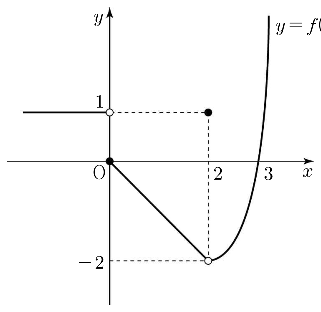
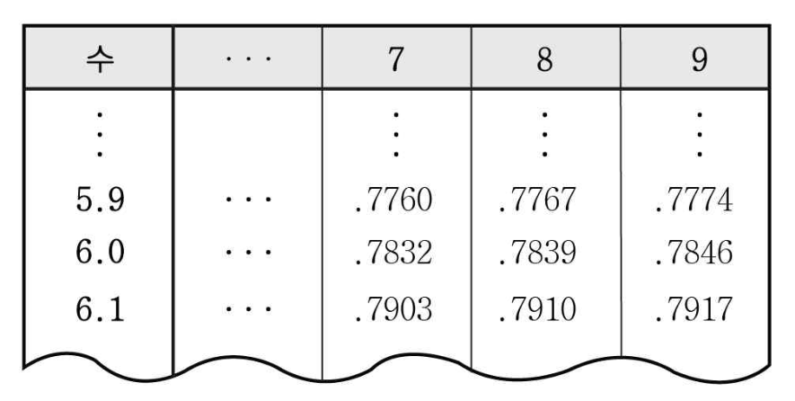
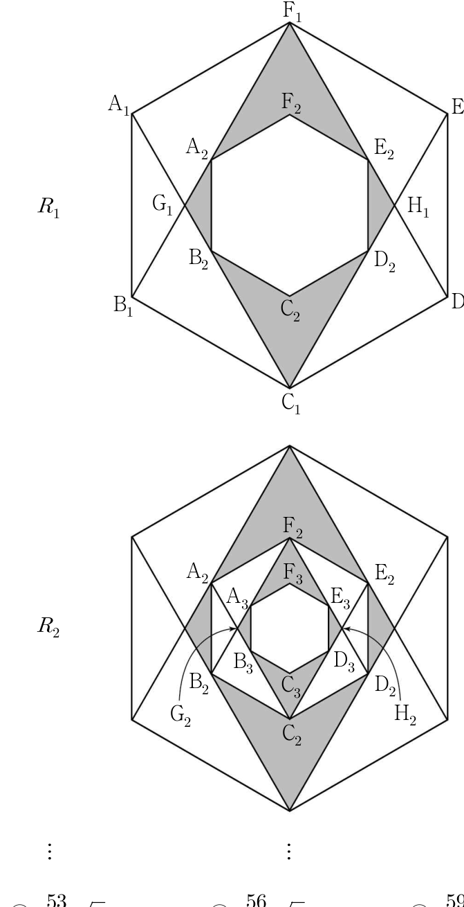

원본 풀이 (내부용)[출제의도] 여러 가지 수열의 합 이해하기
\(
\begin{aligned}
\sum_{k=1}^{10}(2a_k+b_k)
&=2\sum_{k=1}^{10}a_k+\sum_{k=1}^{10}b_k\\
&=2\times7+\sum_{k=1}^{10}b_k=38
\end{aligned}
\)
이므로
\(
\sum_{k=1}^{10}b_k=38-14=24
\)
이다.
생성기 숫자판 1/6 · G2M1-03#0$\sum_{k=1}^{8}a_{k}=8$, $\sum_{k=1}^{8}\left(2a_{k}+3b_{k}\right)=85$일 때, $\sum_{k=1}^{8}b_{k}$의 값으로 옳은 것을 고르세요.
① $19$② $20$③ $21$④ $22$⑤ $23$
정답⑤ $23$ $\sum_{k=1}^{8}\left(2a_{k}+3b_{k}\right)=2\sum_{k=1}^{8}a_{k}+3\sum_{k=1}^{8}b_{k}$ $=16+3\sum_{k=1}^{8}b_{k}=85$ 따라서 $\sum_{k=1}^{8}b_{k}=23$
생성기 숫자판 6/6 · G2M1-03#0$\sum_{k=1}^{8}a_{k}=5$, $\sum_{k=1}^{8}\left(3a_{k}+b_{k}\right)=34$일 때, $\sum_{k=1}^{8}b_{k}$의 값으로 옳은 것을 고르세요.
① $17$② $18$③ $19$④ $21$⑤ $23$
정답③ $19$ $\sum_{k=1}^{8}\left(3a_{k}+b_{k}\right)=3\sum_{k=1}^{8}a_{k}+\sum_{k=1}^{8}b_{k}$ $=15+\sum_{k=1}^{8}b_{k}=34$ 따라서 $\sum_{k=1}^{8}b_{k}=19$
숫자: 원본 1 7 1 2 38 1 → 쌍둥이 1 5 1 3 34 1 · 같은 수: 1
5. 2018년 6월 가형 5번 · 3점 · 고1 범위 · 함수 · G2f-17#2
원본 (내부용)그림은 두 함수 $f: X \to Y$, $g:Y \to Y$를 나타낸 것이다. $X$ $Y$ $Y$ $1$ $2$ $3$ $4$ $5$ $6$ $4$ $5$ $6$ $f$ $g$ $( f^{ -1} \circ g ) ( 4 )$의 값은? [3점]
① $1$② $2$③ $3$④ $4$⑤ $5$
원본 정답 ②
원본 풀이 (내부용)[출제의도] 합성함수 이해하기
\(
(f^{-1}\circ g)(4)=f^{-1}(g(4))=f^{-1}(6)=2
\)
생성기 숫자판 1/6 · G2f-17#2그림은 두 함수 $f:X\to Y$, $g:Y\to Y$를 나타낸 것입니다. $\left(f^{-1}\circ g\right)\left(9\right)$의 값으로 옳은 것을 고르세요.
① $11$② $15$③ $16$④ $17$⑤ $18$
정답③ $16$ 그림에서 $g\left(9\right)=14$ $f\left(16\right)=14$이므로 $f^{-7}\left(14\right)=16$ 따라서 $\left(f^{-7}\circ g\right)\left(9\right)=f^{-7}\left(g\left(9\right)\right)=16$
숫자: 원본 1 2 3 4 5 6 4 5 6 1 4 → 쌍둥이 1 9 · 같은 수: 1
생성기 숫자판 2/6 · G2f-17#2그림은 두 함수 $f:X\to Y$, $g:Y\to Y$를 나타낸 것입니다. $\left(f^{-1}\circ g\right)\left(13\right)$의 값으로 옳은 것을 고르세요.
① $9$② $13$③ $15$④ $16$⑤ $17$
정답③ $15$ 그림에서 $g\left(13\right)=14$ $f\left(15\right)=14$이므로 $f^{-7}\left(14\right)=15$ 따라서 $\left(f^{-7}\circ g\right)\left(13\right)=f^{-7}\left(g\left(13\right)\right)=15$
숫자: 원본 1 2 3 4 5 6 4 5 6 1 4 → 쌍둥이 1 13 · 같은 수: 1
생성기 숫자판 3/6 · G2f-17#2그림은 두 함수 $f:X\to Y$, $g:Y\to Y$를 나타낸 것입니다. $\left(f^{-1}\circ g\right)\left(11\right)$의 값으로 옳은 것을 고르세요.
① $7$② $11$③ $12$④ $13$⑤ $14$
정답② $11$ 그림에서 $g\left(11\right)=15$ $f\left(11\right)=15$이므로 $f^{-7}\left(15\right)=11$ 따라서 $\left(f^{-7}\circ g\right)\left(11\right)=f^{-7}\left(g\left(11\right)\right)=11$
숫자: 원본 1 2 3 4 5 6 4 5 6 1 4 → 쌍둥이 1 11 · 같은 수: 1
생성기 숫자판 4/6 · G2f-17#2그림은 두 함수 $f:X\to Y$, $g:Y\to Y$를 나타낸 것입니다. $\left(f^{-1}\circ g\right)\left(10\right)$의 값으로 옳은 것을 고르세요.
① $9$② $13$③ $15$④ $16$⑤ $17$
정답② $13$ 그림에서 $g\left(10\right)=9$ $f\left(13\right)=9$이므로 $f^{-7}\left(9\right)=13$ 따라서 $\left(f^{-7}\circ g\right)\left(10\right)=f^{-7}\left(g\left(10\right)\right)=13$
숫자: 원본 1 2 3 4 5 6 4 5 6 1 4 → 쌍둥이 1 10 · 같은 수: 1
생성기 숫자판 5/6 · G2f-17#2그림은 두 함수 $f:X\to Y$, $g:Y\to Y$를 나타낸 것입니다. $\left(f^{-1}\circ g\right)\left(15\right)$의 값으로 옳은 것을 고르세요.
① $7$② $12$③ $14$④ $15$⑤ $16$
정답② $12$ 그림에서 $g\left(15\right)=15$ $f\left(12\right)=15$이므로 $f^{-7}\left(15\right)=12$ 따라서 $\left(f^{-7}\circ g\right)\left(15\right)=f^{-7}\left(g\left(15\right)\right)=12$
숫자: 원본 1 2 3 4 5 6 4 5 6 1 4 → 쌍둥이 1 15 · 같은 수: 1
생성기 숫자판 6/6 · G2f-17#2그림은 두 함수 $f:X\to Y$, $g:Y\to Y$를 나타낸 것입니다. $\left(f^{-1}\circ g\right)\left(13\right)$의 값으로 옳은 것을 고르세요.
① $7$② $12$③ $13$④ $14$⑤ $15$
정답② $12$ 그림에서 $g\left(13\right)=13$ $f\left(12\right)=13$이므로 $f^{-7}\left(13\right)=12$ 따라서 $\left(f^{-7}\circ g\right)\left(13\right)=f^{-7}\left(g\left(13\right)\right)=12$
숫자: 원본 1 2 3 4 5 6 4 5 6 1 4 → 쌍둥이 1 13 · 같은 수: 1
6. 2018년 6월 가형 6번 · 3점 · 수학Ⅱ 함수의 극한·연속 · G2f-15#2
원본 (내부용)함수 $y=f(x)$의 그래프가 그림과 같다. $y$ $x$ $1$ $\mathrm{O}$ $2$ $3$ $-2$ $y=f ( x )$ $\lim_{x \to 0-} {f(x) } + \lim_{x \to 2} { f(x)}$의 값은? [3점]

① $-2$② $-1$③ $0$④ $1$⑤ $2$
원본 정답 ②
원본 풀이 (내부용)[출제의도] 함수의 극한 이해하기
\(
\lim_{x\to0}f(x)+\lim_{x\to2}f(x)=1+(-2)=-1
\)
생성기 숫자판 1/5 · G2f-15#2함수 $y=f\left(x\right)$의 그래프가 그림과 같습니다. $\lim_{x\to 0^{-}}f\left(x\right)+\lim_{x\to 1}f\left(x\right)$의 값으로 옳은 것을 고르세요.
① $-2$② $-1$③ $0$④ $1$⑤ $2$
정답③ $0$ $x\to 0^{-}$일 때 $f\left(x\right)\to 1$ $x\to 1$일 때 $f\left(x\right)\to -1$ 따라서 구하는 값은 $1-1=0$
숫자: 원본 1 2 3 2 0 2 → 쌍둥이 0 1 · 같은 수: 0 1
생성기 숫자판 2/5 · G2f-15#2함수 $y=f\left(x\right)$의 그래프가 그림과 같습니다. $\lim_{x\to 0^{-}}f\left(x\right)+\lim_{x\to 3}f\left(x\right)$의 값으로 옳은 것을 고르세요.
① $-2$② $-1$③ $0$④ $1$⑤ $2$
정답③ $0$ $x\to 0^{-}$일 때 $f\left(x\right)\to 2$ $x\to 3$일 때 $f\left(x\right)\to -2$ 따라서 구하는 값은 $2-2=0$
숫자: 원본 1 2 3 2 0 2 → 쌍둥이 0 3 · 같은 수: 0 3
생성기 숫자판 3/5 · G2f-15#2함수 $y=f\left(x\right)$의 그래프가 그림과 같습니다. $\lim_{x\to 0^{-}}f\left(x\right)+\lim_{x\to 3}f\left(x\right)$의 값으로 옳은 것을 고르세요.
① $-1$② $0$③ $1$④ $2$⑤ $3$
정답③ $1$ $x\to 0^{-}$일 때 $f\left(x\right)\to 2$ $x\to 3$일 때 $f\left(x\right)\to -1$ 따라서 구하는 값은 $2-1=1$
숫자: 원본 1 2 3 2 0 2 → 쌍둥이 0 3 · 같은 수: 0 3
생성기 숫자판 4/5 · G2f-15#2함수 $y=f\left(x\right)$의 그래프가 그림과 같습니다. $\lim_{x\to 0^{-}}f\left(x\right)+\lim_{x\to 3}f\left(x\right)$의 값으로 옳은 것을 고르세요.
① $0$② $1$③ $2$④ $3$⑤ $4$
정답③ $2$ $x\to 0^{-}$일 때 $f\left(x\right)\to 3$ $x\to 3$일 때 $f\left(x\right)\to -1$ 따라서 구하는 값은 $3-1=2$
숫자: 원본 1 2 3 2 0 2 → 쌍둥이 0 3 · 같은 수: 0 3
생성기 숫자판 5/5 · G2f-15#2함수 $y=f\left(x\right)$의 그래프가 그림과 같습니다. $\lim_{x\to 0^{-}}f\left(x\right)+\lim_{x\to 2}f\left(x\right)$의 값으로 옳은 것을 고르세요.
① $-1$② $0$③ $1$④ $2$⑤ $3$
정답③ $1$ $x\to 0^{-}$일 때 $f\left(x\right)\to 2$ $x\to 2$일 때 $f\left(x\right)\to -1$ 따라서 구하는 값은 $2-1=1$
숫자: 원본 1 2 3 2 0 2 → 쌍둥이 0 2 · 같은 수: 0 2
7. 2018년 6월 가형 7번 · 3점 · 고1 범위 · 유리함수와 무리함수 · G2H-04b#2
원본 (내부용)함수 $y= \frac{ax}{2x-1}$$( a != 0 )$의 그래프의 두 점근선이 만나는 점의 좌표가 $( b, \frac{1}{2} )$일 때, $a+b$의 값은? (단, $a$, $b$는 상수이다.) [3점]
① $\frac{1}{2}$② $1$③ $\frac{3}{2}$④ $2$⑤ $\frac{5}{2}$
원본 정답 ③
원본 풀이 (내부용)[출제의도] 유리함수의 그래프 이해하기
함수
\(
y=\frac{ax}{2x-1}=\frac{\frac a2}{2x-1}+\frac a2
\)
의 그래프의 점근선의 방정식은 \(x=\frac12,\ y=\frac a2\)이다.
그러므로 두 점근선이 만나는 점의 좌표는 \(\left(\frac12,\frac a2\right)\)이고,
\(
\left(\frac12,\frac a2\right)=\left(b,\frac12\right)
\)
이다. 따라서 \(a=1,\ b=\frac12\)이다.
\(
a+b=1+\frac12=\frac32
\)
이다.
생성기 숫자판 1/6 · G2H-04b#2함수 $y=\frac{ax}{2x-1}\ \left(a\ne 0\right)$의 그래프의 두 점근선이 만나는 점의 좌표가 $\left(b,\ 2\right)$일 때, $a+b$의 값으로 옳은 것을 고르세요. (단, $a$, $b$는 상수입니다.)
① $\frac{5}{2}$② $3$③ $\frac{7}{2}$④ $4$⑤ $\frac{9}{2}$
정답⑤ $\frac{9}{2}$ 점근선은 두 직선 $x=\frac{1}{2}$, $y=\frac{a}{2}$ 교점 $\left(\frac{1}{2},\ \frac{a}{2}\right)$이 $\left(b,\ 2\right)$이므로 $b=\frac{1}{2}$, $a=4$ 따라서 $a+b=\frac{9}{2}$
숫자: 원본 2 1 0 1 2 → 쌍둥이 2 1 0 2 · 같은 수: 0 1 2
생성기 숫자판 2/6 · G2H-04b#2함수 $y=\frac{ax}{5x-7}\ \left(a\ne 0\right)$의 그래프의 두 점근선이 만나는 점의 좌표가 $\left(b,\ 6\right)$일 때, $a+b$의 값으로 옳은 것을 고르세요. (단, $a$, $b$는 상수입니다.)
① $\frac{147}{5}$② $\frac{152}{5}$③ $\frac{157}{5}$④ $\frac{162}{5}$⑤ $\frac{167}{5}$
생성기 숫자판 4/6 · G2H-04b#2함수 $y=\frac{ax}{3x-1}\ \left(a\ne 0\right)$의 그래프의 두 점근선이 만나는 점의 좌표가 $\left(b,\ 1\right)$일 때, $a+b$의 값으로 옳은 것을 고르세요. (단, $a$, $b$는 상수입니다.)
① $\frac{8}{3}$② $3$③ $\frac{10}{3}$④ $\frac{11}{3}$⑤ $4$
정답③ $\frac{10}{3}$ 점근선은 두 직선 $x=\frac{1}{3}$, $y=\frac{a}{3}$ 교점 $\left(\frac{1}{3},\ \frac{a}{3}\right)$이 $\left(b,\ 1\right)$이므로 $b=\frac{1}{3}$, $a=3$ 따라서 $a+b=\frac{10}{3}$
숫자: 원본 2 1 0 1 2 → 쌍둥이 3 1 0 1 · 같은 수: 0 1
생성기 숫자판 5/6 · G2H-04b#2함수 $y=\frac{ax}{2x-1}\ \left(a\ne 0\right)$의 그래프의 두 점근선이 만나는 점의 좌표가 $\left(b,\ \frac{1}{2}\right)$일 때, $a+b$의 값으로 옳은 것을 고르세요. (단, $a$, $b$는 상수입니다.)
① $1$② $\frac{3}{2}$③ $2$④ $\frac{5}{2}$⑤ $3$
정답② $\frac{3}{2}$ 점근선은 두 직선 $x=\frac{1}{2}$, $y=\frac{a}{2}$ 교점 $\left(\frac{1}{2},\ \frac{a}{2}\right)$이 $\left(b,\ \frac{1}{2}\right)$이므로 $b=\frac{1}{2}$, $a=1$ 따라서 $a+b=\frac{3}{2}$
숫자: 원본 2 1 0 1 2 → 쌍둥이 2 1 0 1 2 · 같은 수: 0 1 2
생성기 숫자판 6/6 · G2H-04b#2함수 $y=\frac{ax}{3x-1}\ \left(a\ne 0\right)$의 그래프의 두 점근선이 만나는 점의 좌표가 $\left(b,\ 2\right)$일 때, $a+b$의 값으로 옳은 것을 고르세요. (단, $a$, $b$는 상수입니다.)
① $6$② $\frac{19}{3}$③ $\frac{20}{3}$④ $7$⑤ $\frac{22}{3}$
정답② $\frac{19}{3}$ 점근선은 두 직선 $x=\frac{1}{3}$, $y=\frac{a}{3}$ 교점 $\left(\frac{1}{3},\ \frac{a}{3}\right)$이 $\left(b,\ 2\right)$이므로 $b=\frac{1}{3}$, $a=6$ 따라서 $a+b=\frac{19}{3}$
숫자: 원본 2 1 0 1 2 → 쌍둥이 3 1 0 2 · 같은 수: 0 1 2
8. 2018년 6월 가형 8번 · 3점 · 고1 범위 · 명제 · G2H-03b#1
원본 (내부용)실수 $x$에 대한 두 조건 $p$:$x^{2} -7x+10\le 0$, $q$:$( x+1 ) ( x- a ) \le 0$ 에 대하여 $p$가 $q$이기 위한 충분조건이 되도록 하는 자연수 $a$의 최솟값은? [3점]
① $3$② $4$③ $5$④ $6$⑤ $7$
원본 정답 ③
원본 풀이 (내부용)[출제의도] 명제의 충분조건 이해하기
두 조건 \(p,\ q\)의 진리집합을 각각 \(P,\ Q\)라 하자.
\(p\)가 \(q\)이기 위한 충분조건이 되려면 \(P\subset Q\)이어야 한다.
\(
p:x^2-7x+10=(x-2)(x-5)\le0
\)
\(
P=\{x\mid 2\le x\le5\}
\)
\(
q:(x+1)(x-a)\le0
\)
\(
Q=\{x\mid -1\le x\le a\}
\)
이때 \(P\subset Q\)이므로 \(a\ge5\)이다. 따라서 자연수 \(a\)의 최솟값은 5이다.
생성기 숫자판 1/6 · G2H-03b#1실수 $x$에 대한 두 조건 $p$: $x^{2}-8x+15\le 0$, $q$: $\left(x+3\right)\left(x-a\right)\le 0$에 대하여 $p$가 $q$이기 위한 충분조건이 되도록 하는 자연수 $a$의 최솟값으로 옳은 것을 고르세요.
생성기 숫자판 2/6 · G2H-03b#1실수 $x$에 대한 두 조건 $p$: $x^{2}-6x+5\le 0$, $q$: $\left(x+1\right)\left(x-a\right)\le 0$에 대하여 $p$가 $q$이기 위한 충분조건이 되도록 하는 자연수 $a$의 최솟값으로 옳은 것을 고르세요.
생성기 숫자판 3/6 · G2H-03b#1실수 $x$에 대한 두 조건 $p$: $x^{2}-9x+18\le 0$, $q$: $\left(x+1\right)\left(x-a\right)\le 0$에 대하여 $p$가 $q$이기 위한 충분조건이 되도록 하는 자연수 $a$의 최솟값으로 옳은 것을 고르세요.
생성기 숫자판 4/6 · G2H-03b#1실수 $x$에 대한 두 조건 $p$: $x^{2}-11x+28\le 0$, $q$: $\left(x+3\right)\left(x-a\right)\le 0$에 대하여 $p$가 $q$이기 위한 충분조건이 되도록 하는 자연수 $a$의 최솟값으로 옳은 것을 고르세요.
생성기 숫자판 5/6 · G2H-03b#1실수 $x$에 대한 두 조건 $p$: $x^{2}-10x+24\le 0$, $q$: $\left(x+1\right)\left(x-a\right)\le 0$에 대하여 $p$가 $q$이기 위한 충분조건이 되도록 하는 자연수 $a$의 최솟값으로 옳은 것을 고르세요.
숫자: 원본 7 10 0 1 0 → 쌍둥이 10 24 0 1 0 · 같은 수: 0 1 10
생성기 숫자판 6/6 · G2H-03b#1실수 $x$에 대한 두 조건 $p$: $x^{2}-5x+4\le 0$, $q$: $\left(x+1\right)\left(x-a\right)\le 0$에 대하여 $p$가 $q$이기 위한 충분조건이 되도록 하는 자연수 $a$의 최솟값으로 옳은 것을 고르세요.
원본 (내부용)전체집합 $U= \{ 1, 2, 3, 4 \}$의 부분집합 $A$에 대하여 $\{ 1, 2 \} \cap A != \varnothing$ 을 만족시키는 모든 집합 $A$의 개수는? [3점]
① $6$② $8$③ $10$④ $12$⑤ $14$
원본 정답 ④
원본 풀이 (내부용)[출제의도] 집합의 포함 관계 이해하기
전체집합 \(U=\{1,2,3,4\}\)의 모든 부분집합은
\(
\varnothing,\ \{1\},\ \{2\},\ \{3\},\ \{4\},\
\{1,2\},\ \{1,3\},\ \{1,4\},\ \{2,3\},\ \{2,4\},\
\{3,4\},\ \{1,2,3\},\ \{1,2,4\},\ \{1,3,4\},\
\{2,3,4\},\ \{1,2,3,4\}
\)
이다.
\(\{1,2\}\cap A\ne\varnothing\)이므로 집합 \(A\)는 1, 2 중 적어도 하나를 원소로 가져야 한다.
1, 2를 원소로 갖지 않는 전체집합 \(U\)의 부분집합을 모두 구하면 \(\varnothing,\ \{3\},\ \{4\},\ \{3,4\}\)이므로 집합 \(A\)의 개수는 \(16-4=12\)이다.
생성기 숫자판 1/6 · G2H-03b#9전체집합 $U=\left\{1,\ 2,\ 3,\ 4,\ 5,\ 6\right\}$의 부분집합 $A$에 대하여 $\left\{1,\ 2,\ 6\right\}\cap A\ne \varnothing$을 만족시키는 모든 집합 $A$의 개수로 옳은 것을 고르세요.
① $53$② $54$③ $55$④ $56$⑤ $57$
정답④ $56$ 전체 부분집합의 개수 $2^{6}=64$에서 $\left\{1,\ 2,\ 6\right\}$의 원소를 하나도 갖지 않는 것 $2^{3}=8$개를 빼면 $64-8=56$
10. 2018년 6월 가형 10번 · 3점 · 고1 범위 · 유리함수와 무리함수 · G2H-04b#10
원본 (내부용)좌표평면에서 실수 $a$에 대하여 곡선 $y= \sqrt{x+a}$가 두 점 $( 2, 3 )$, $( 3, 2 )$를 이은 선분과 만나기 위한 $a$의 최댓값을 $M$, 최솟값을 $m$이라 할 때, $M+m$의 값은? [3점]
① $4$② $5$③ $6$④ $7$⑤ $8$
원본 정답 ⑤
원본 풀이 (내부용)[출제의도] 무리함수의 그래프 이해하기
함수 \(y=\sqrt{x+a}\)의 그래프는 함수 \(y=\sqrt{x}\)의 그래프를 \(x\)축의 방향으로 \(-a\)만큼 평행이동한 것이므로 그림과 같다.
함수 \(y=\sqrt{x+a}\)의 그래프가 두 점 \((2,3),\ (3,2)\)를 지나는 선분과 만나도록 평행이동하여 점 \((3,2)\)를 지날 때 실수 \(a\)는 최소이므로
\(
\sqrt{3+a}=2
\)
이다. 따라서 \(a=1\)이다.
그리고 점 \((2,3)\)을 지날 때 실수 \(a\)는 최대이므로
\(
\sqrt{2+a}=3
\)
이다. 따라서 \(a=7\)이다.
따라서 최댓값 \(M=7\), 최솟값 \(m=1\)이므로 \(M+m=7+1=8\)이다.
생성기 숫자판 1/6 · G2H-04b#10좌표평면에서 실수 $a$에 대하여 곡선 $y=\sqrt{x+a}$가 두 점 $\left(1,\ 5\right)$, $\left(3,\ 4\right)$를 이은 선분과 만나기 위한 $a$의 최댓값을 $M$, 최솟값을 $m$이라 할 때, $M+m$의 값으로 옳은 것을 고르세요.
① $37$② $38$③ $39$④ $40$⑤ $41$
정답① $37$ $a$의 값이 커질수록 곡선 $y=\sqrt{x+a}$는 왼쪽으로 이동하므로 선분의 두 끝점을 지날 때 $a$가 최대·최소입니다. 점 $\left(1,\ 5\right)$를 지날 때 $5=\sqrt{1+a}$에서 $a=24$ 점 $\left(3,\ 4\right)$를 지날 때 $4=\sqrt{3+a}$에서 $a=13$ $M=24$, $m=13$이므로 $M+m=37$
숫자: 원본 2 3 3 2 → 쌍둥이 1 5 3 4 · 같은 수: 3
생성기 숫자판 2/6 · G2H-04b#10좌표평면에서 실수 $a$에 대하여 곡선 $y=\sqrt{x+a}$가 두 점 $\left(1,\ 4\right)$, $\left(4,\ 3\right)$를 이은 선분과 만나기 위한 $a$의 최댓값을 $M$, 최솟값을 $m$이라 할 때, $M+m$의 값으로 옳은 것을 고르세요.
① $20$② $21$③ $22$④ $23$⑤ $24$
정답① $20$ $a$의 값이 커질수록 곡선 $y=\sqrt{x+a}$는 왼쪽으로 이동하므로 선분의 두 끝점을 지날 때 $a$가 최대·최소입니다. 점 $\left(1,\ 4\right)$를 지날 때 $4=\sqrt{1+a}$에서 $a=15$ 점 $\left(4,\ 3\right)$을 지날 때 $3=\sqrt{4+a}$에서 $a=5$ $M=15$, $m=5$이므로 $M+m=20$
숫자: 원본 2 3 3 2 → 쌍둥이 1 4 4 3 · 같은 수: 3
생성기 숫자판 3/6 · G2H-04b#10좌표평면에서 실수 $a$에 대하여 곡선 $y=\sqrt{x+a}$가 두 점 $\left(1,\ 5\right)$, $\left(2,\ 4\right)$를 이은 선분과 만나기 위한 $a$의 최댓값을 $M$, 최솟값을 $m$이라 할 때, $M+m$의 값으로 옳은 것을 고르세요.
① $37$② $38$③ $39$④ $40$⑤ $41$
정답② $38$ $a$의 값이 커질수록 곡선 $y=\sqrt{x+a}$는 왼쪽으로 이동하므로 선분의 두 끝점을 지날 때 $a$가 최대·최소입니다. 점 $\left(1,\ 5\right)$를 지날 때 $5=\sqrt{1+a}$에서 $a=24$ 점 $\left(2,\ 4\right)$를 지날 때 $4=\sqrt{2+a}$에서 $a=14$ $M=24$, $m=14$이므로 $M+m=38$
숫자: 원본 2 3 3 2 → 쌍둥이 1 5 2 4 · 같은 수: 2
생성기 숫자판 4/6 · G2H-04b#10좌표평면에서 실수 $a$에 대하여 곡선 $y=\sqrt{x+a}$가 두 점 $\left(4,\ 3\right)$, $\left(6,\ 1\right)$를 이은 선분과 만나기 위한 $a$의 최댓값을 $M$, 최솟값을 $m$이라 할 때, $M+m$의 값으로 옳은 것을 고르세요.
① $-2$② $-1$③ $0$④ $1$⑤ $2$
정답③ $0$ $a$의 값이 커질수록 곡선 $y=\sqrt{x+a}$는 왼쪽으로 이동하므로 선분의 두 끝점을 지날 때 $a$가 최대·최소입니다. 점 $\left(4,\ 3\right)$을 지날 때 $3=\sqrt{4+a}$에서 $a=5$ 점 $\left(6,\ 1\right)$을 지날 때 $1=\sqrt{6+a}$에서 $a=-5$ $M=5$, $m=-5$이므로 $M+m=0$
숫자: 원본 2 3 3 2 → 쌍둥이 4 3 6 1 · 같은 수: 3
생성기 숫자판 5/6 · G2H-04b#10좌표평면에서 실수 $a$에 대하여 곡선 $y=\sqrt{x+a}$가 두 점 $\left(4,\ 4\right)$, $\left(7,\ 2\right)$를 이은 선분과 만나기 위한 $a$의 최댓값을 $M$, 최솟값을 $m$이라 할 때, $M+m$의 값으로 옳은 것을 고르세요.
① $8$② $9$③ $10$④ $11$⑤ $12$
정답② $9$ $a$의 값이 커질수록 곡선 $y=\sqrt{x+a}$는 왼쪽으로 이동하므로 선분의 두 끝점을 지날 때 $a$가 최대·최소입니다. 점 $\left(4,\ 4\right)$를 지날 때 $4=\sqrt{4+a}$에서 $a=12$ 점 $\left(7,\ 2\right)$를 지날 때 $2=\sqrt{7+a}$에서 $a=-3$ $M=12$, $m=-3$이므로 $M+m=9$
숫자: 원본 2 3 3 2 → 쌍둥이 4 4 7 2 · 같은 수: 2
생성기 숫자판 6/6 · G2H-04b#10좌표평면에서 실수 $a$에 대하여 곡선 $y=\sqrt{x+a}$가 두 점 $\left(1,\ 3\right)$, $\left(4,\ 2\right)$를 이은 선분과 만나기 위한 $a$의 최댓값을 $M$, 최솟값을 $m$이라 할 때, $M+m$의 값으로 옳은 것을 고르세요.
① $7$② $8$③ $9$④ $10$⑤ $11$
정답② $8$ $a$의 값이 커질수록 곡선 $y=\sqrt{x+a}$는 왼쪽으로 이동하므로 선분의 두 끝점을 지날 때 $a$가 최대·최소입니다. 점 $\left(1,\ 3\right)$을 지날 때 $3=\sqrt{1+a}$에서 $a=8$ 점 $\left(4,\ 2\right)$를 지날 때 $2=\sqrt{4+a}$에서 $a=0$ $M=8$, $m=0$이므로 $M+m=8$
숫자: 원본 2 3 3 2 → 쌍둥이 1 3 4 2 · 같은 수: 2 3
11. 2018년 6월 가형 11번 · 3점 · 고1 범위 · 집합 · G2H-03b#12
원본 (내부용)어느 학급 전체 학생 $30$명이 있다. 이 학급의 학생들 중 방과후 수업으로 수학을 신청한 학생이 $24$명, 영어를 신청한 학생이 $15$명이라 하자. 이 학급의 학생 중에서 수학과 영어를 모두 신청한 학생의 수의 최댓값과 최솟값의 합은? [3점]
① $20$② $21$③ $22$④ $23$⑤ $24$
원본 정답 ⑤
원본 풀이 (내부용)[출제의도] 집합의 연산을 이용하여 실생활 문제 해결하기
수학을 신청한 모든 학생의 집합을 \(A\), 영어를 신청한 모든 학생의 집합을 \(B\)라 하자.
\(
n(A\cup B)=n(A)+n(B)-n(A\cap B)
\)
\(
24=15+n(B)-n(A\cap B)\le30
\)
\(
\therefore n(A\cap B)\ge9
\)
한편 \(A\cap B\subset B\)이므로 \(n(A\cap B)\le n(B)=15\)이다.
따라서 최댓값과 최솟값의 합은 \(15+9=24\)이다.
생성기 숫자판 1/6 · G2H-03b#12어느 학급 전체 학생 $37$명 중 수학을 신청한 학생이 $21$명, 영어를 신청한 학생이 $17$명입니다. 이 학급의 학생 중에서 수학과 영어를 모두 신청한 학생의 수의 최댓값과 최솟값의 합으로 옳은 것을 고르세요.
13. 2018년 6월 가형 13번 · 3점 · 고1 범위 · 함수 · G2H-04b#11
원본 (내부용)$k<0$인 실수 $k$에 대하여 함수 $f ( x ) =x^{2} -2x+k$$( x \ge 1 )$의 그래프와 그 역함수 $y=f^{-1} ( x )$의 그래프가 만나는 점을 $\mathrm{P}$라 하고, 점 $\mathrm{P}$에서 $x$축에 내린 수선의 발을 $\mathrm{H}$라 하자. 삼각형 $\mathrm{POH}$의 넓이가 $8$일 때, $k$의 값은? (단, $\mathrm{O}$는 원점이다.) [3점]
① $-6$② $-5$③ $-4$④ $-3$⑤ $-2$
원본 정답 ③
원본 풀이 (내부용)[출제의도] 역함수의 그래프 이해하기
\(
f(x)=x^2-2x+k=(x-1)^2+k-1\quad(x\ge1)
\)
함수 \(y=f(x)\)의 그래프와 그 역함수 \(y=f^{-1}(x)\)의 그래프가 만나는 점은 함수 \(y=f(x)\)의 그래프와 직선 \(y=x\)가 만나는 점과 같다.
따라서 점 \(P\)는 직선 \(y=x\) 위의 점이므로 점 \(P\)의 좌표를 \((t,t)\)라 하면 삼각형 \(POH\)의 넓이가 8이므로
\(
\frac12\times t\times t=8,\quad t^2=16
\)
이다. \(\therefore t=4\quad(\because t\ge1)\)
한편 점 \(P(4,4)\)는 함수 \(f(x)=x^2-2x+k\)의 그래프 위의 점이므로
\(
f(4)=4^2-2\times4+k=4
\)
이다. 따라서 \(k=-4\)이다.
생성기 숫자판 1/6 · G2H-04b#11$k<0$인 실수 $k$에 대하여 함수 $f\left(x\right)=x^{2}-2x+k\ \left(x\ge 1\right)$의 그래프와 그 역함수 $y=f^{-1}\left(x\right)$의 그래프가 만나는 점을 $\mathrm{P}$, 점 $\mathrm{P}$에서 $x$축에 내린 수선의 발을 $\mathrm{H}$라 합시다. 삼각형 $\mathrm{POH}$의 넓이가 $32$일 때, $k$의 값으로 옳은 것을 고르세요. (단, $\mathrm{O}$는 원점입니다.)
① $-40$② $-39$③ $-38$④ $-37$⑤ $-36$
정답① $-40$ $y=f\left(x\right)$와 역함수의 그래프의 교점은 직선 $y=x$ 위에 있으므로 $\mathrm{P}\left(t,\ t\right)$라 하면 넓이는 $\frac{1}{2}t^{2}=32$, $t=8$ $f\left(8\right)=8$에서 $64-16+k=8$ 따라서 $k=-40$
숫자: 원본 0 2 1 1 8 → 쌍둥이 0 2 1 1 32 · 같은 수: 0 1 2
생성기 숫자판 2/6 · G2H-04b#11$k<0$인 실수 $k$에 대하여 함수 $f\left(x\right)=x^{2}-4x+k\ \left(x\ge 2\right)$의 그래프와 그 역함수 $y=f^{-1}\left(x\right)$의 그래프가 만나는 점을 $\mathrm{P}$, 점 $\mathrm{P}$에서 $x$축에 내린 수선의 발을 $\mathrm{H}$라 합시다. 삼각형 $\mathrm{POH}$의 넓이가 $32$일 때, $k$의 값으로 옳은 것을 고르세요. (단, $\mathrm{O}$는 원점입니다.)
① $-24$② $-23$③ $-22$④ $-21$⑤ $-20$
정답① $-24$ $y=f\left(x\right)$와 역함수의 그래프의 교점은 직선 $y=x$ 위에 있으므로 $\mathrm{P}\left(t,\ t\right)$라 하면 넓이는 $\frac{1}{2}t^{2}=32$, $t=8$ $f\left(8\right)=8$에서 $64-32+k=8$ 따라서 $k=-24$
숫자: 원본 0 2 1 1 8 → 쌍둥이 0 4 2 1 32 · 같은 수: 0 1 2
생성기 숫자판 3/6 · G2H-04b#11$k<0$인 실수 $k$에 대하여 함수 $f\left(x\right)=x^{2}-4x+k\ \left(x\ge 2\right)$의 그래프와 그 역함수 $y=f^{-1}\left(x\right)$의 그래프가 만나는 점을 $\mathrm{P}$, 점 $\mathrm{P}$에서 $x$축에 내린 수선의 발을 $\mathrm{H}$라 합시다. 삼각형 $\mathrm{POH}$의 넓이가 $\frac{49}{2}$일 때, $k$의 값으로 옳은 것을 고르세요. (단, $\mathrm{O}$는 원점입니다.)
① $-17$② $-16$③ $-15$④ $-14$⑤ $-13$
정답④ $-14$ $y=f\left(x\right)$와 역함수의 그래프의 교점은 직선 $y=x$ 위에 있으므로 $\mathrm{P}\left(t,\ t\right)$라 하면 넓이는 $\frac{1}{2}t^{2}=\frac{49}{2}$, $t=7$ $f\left(7\right)=7$에서 $49-28+k=7$ 따라서 $k=-14$
숫자: 원본 0 2 1 1 8 → 쌍둥이 0 4 2 1 49 2 · 같은 수: 0 1 2
생성기 숫자판 4/6 · G2H-04b#11$k<0$인 실수 $k$에 대하여 함수 $f\left(x\right)=x^{2}-2x+k\ \left(x\ge 1\right)$의 그래프와 그 역함수 $y=f^{-1}\left(x\right)$의 그래프가 만나는 점을 $\mathrm{P}$, 점 $\mathrm{P}$에서 $x$축에 내린 수선의 발을 $\mathrm{H}$라 합시다. 삼각형 $\mathrm{POH}$의 넓이가 $\frac{49}{2}$일 때, $k$의 값으로 옳은 것을 고르세요. (단, $\mathrm{O}$는 원점입니다.)
① $-29$② $-28$③ $-27$④ $-26$⑤ $-25$
정답② $-28$ $y=f\left(x\right)$와 역함수의 그래프의 교점은 직선 $y=x$ 위에 있으므로 $\mathrm{P}\left(t,\ t\right)$라 하면 넓이는 $\frac{1}{2}t^{2}=\frac{49}{2}$, $t=7$ $f\left(7\right)=7$에서 $49-14+k=7$ 따라서 $k=-28$
숫자: 원본 0 2 1 1 8 → 쌍둥이 0 2 1 1 49 2 · 같은 수: 0 1 2
생성기 숫자판 5/6 · G2H-04b#11$k<0$인 실수 $k$에 대하여 함수 $f\left(x\right)=x^{2}-2x+k\ \left(x\ge 1\right)$의 그래프와 그 역함수 $y=f^{-1}\left(x\right)$의 그래프가 만나는 점을 $\mathrm{P}$, 점 $\mathrm{P}$에서 $x$축에 내린 수선의 발을 $\mathrm{H}$라 합시다. 삼각형 $\mathrm{POH}$의 넓이가 $\frac{25}{2}$일 때, $k$의 값으로 옳은 것을 고르세요. (단, $\mathrm{O}$는 원점입니다.)
① $-13$② $-12$③ $-11$④ $-10$⑤ $-9$
정답④ $-10$ $y=f\left(x\right)$와 역함수의 그래프의 교점은 직선 $y=x$ 위에 있으므로 $\mathrm{P}\left(t,\ t\right)$라 하면 넓이는 $\frac{1}{2}t^{2}=\frac{25}{2}$, $t=5$ $f\left(5\right)=5$에서 $25-10+k=5$ 따라서 $k=-10$
숫자: 원본 0 2 1 1 8 → 쌍둥이 0 2 1 1 25 2 · 같은 수: 0 1 2
생성기 숫자판 6/6 · G2H-04b#11$k<0$인 실수 $k$에 대하여 함수 $f\left(x\right)=x^{2}-2x+k\ \left(x\ge 1\right)$의 그래프와 그 역함수 $y=f^{-1}\left(x\right)$의 그래프가 만나는 점을 $\mathrm{P}$, 점 $\mathrm{P}$에서 $x$축에 내린 수선의 발을 $\mathrm{H}$라 합시다. 삼각형 $\mathrm{POH}$의 넓이가 $18$일 때, $k$의 값으로 옳은 것을 고르세요. (단, $\mathrm{O}$는 원점입니다.)
① $-19$② $-18$③ $-17$④ $-16$⑤ $-15$
정답② $-18$ $y=f\left(x\right)$와 역함수의 그래프의 교점은 직선 $y=x$ 위에 있으므로 $\mathrm{P}\left(t,\ t\right)$라 하면 넓이는 $\frac{1}{2}t^{2}=18$, $t=6$ $f\left(6\right)=6$에서 $36-12+k=6$ 따라서 $k=-18$
숫자: 원본 0 2 1 1 8 → 쌍둥이 0 2 1 1 18 · 같은 수: 0 1 2
14. 2018년 6월 가형 14번 · 4점 · 수학Ⅰ 지수·로그 · 4점 쌍둥이
원본 (내부용)다음은 상용로그표의 일부이다. 이 표를 이용하여 구한 $\log 607 + \log 0.607$의 값은? [4점]

① $1.5664$② $2.0664$③ $2.5664$④ $3.0664$⑤ $3.5664$
원본 정답 ③
원본 풀이 (내부용)[출제의도] 상용로그 이해하기
**표 설명:** 상용로그표의 행에 \(5.9,\ 6.0,\ 6.1\), 열에 \(7,\ 8,\ 9\)가 표시되어 있다. \(6.0\) 행에서 \(7\) 열의 값은 \(0.7832\)이며, 표에는 \(5.9\) 행의 \(7,\ 8,\ 9\) 열 값 \(0.7760,\ 0.7767,\ 0.7774\), \(6.0\) 행의 \(8,\ 9\) 열 값 \(0.7839,\ 0.7846\), \(6.1\) 행의 \(7,\ 8,\ 9\) 열 값 \(0.7903,\ 0.7910,\ 0.7917\)도 보인다.
\(
\begin{aligned}
\log607+\log0.607
&=\log(6.07\times10^2)+\log(6.07\times10^{-1})\\
&=2\log6.07+\log6.07-1\\
&=2\log6.07+1\\
&=2\times0.7832+1=2.5664
\end{aligned}
\)
쌍둥이 1/5 · 4점 쌍둥이다음은 상용로그표의 일부이다. 이 표를 이용하여 구한 $2\log 645+\log 0.645$의 값을 구하시오.
정답$5.4288$ 표에서 $\log64.5=1.8096$이다. 따라서 $\log645=2.8096$, $\log0.645=-0.1904$. 주어진 값은 $2(2.8096)-0.1904=5.4288$.
숫자: 원본 607 0 607 → 쌍둥이 2 645 0 645 · 같은 수: 0
쌍둥이 2/5 · 4점 쌍둥이다음은 상용로그표의 일부이다. 이 표를 이용하여 구한 $\log 827+2\log 0.827$의 값은? [4점]
① $2.2525$② $2.7525$③ $3.2525$④ $3.7525$⑤ $4.2525$
쌍둥이 5/5 · 4점 쌍둥이다음은 상용로그표의 일부이다. 이 표를 이용하여 구한 $\log 573+\log 0.573+\log 5.73$의 값을 구하시오.
정답$3.2746$ 표에서 $\log 57.3=1.7582$이다. 따라서 $\log573=2.7582$, $\log0.573=-0.2418$, $\log5.73=0.7582$. 세 로그를 더하면 $2.7582-0.2418+0.7582=3.2746$.
숫자: 원본 607 0 607 → 쌍둥이 573 0 573 5 73 · 같은 수: 0
15. 2018년 6월 가형 15번 · 4점 · 수학Ⅰ 수열 · 4점 쌍둥이
원본 (내부용)수열 $\{ a_{n} \}$이 $\sum_{k=1}^{n} k a_{k} =n ( n+1 ) ( n+2 )$ 를 만족시킬 때, $\sum_{k=1}^{10} a_{k}$의 값은? [4점]
① $185$② $195$③ $205$④ $215$⑤ $225$
원본 정답 ②
원본 풀이 (내부용)[출제의도] 수열의 합과 일반항 사이의 관계를 이용하여 여러 가지 수열의 합 문제 해결하기
\(
\begin{aligned}
na_n
&=\sum_{k=1}^{n}2k-\sum_{k=1}^{n-1}2k\\
&=n(n+1)(n+2)-(n-1)n(n+1)\\
&=3n(n+1)\quad(n\ge2)
\end{aligned}
\)
\(
\therefore a_n=3(n+1)\quad(n\ge2)
\)
\(
\sum_{k=1}^{1}ka_k=a_1=1\times2\times3=6=3\times(1+1)
\)
이므로 모든 자연수 \(n\)에 대하여 \(a_n=3(n+1)\)이다.
\(
\therefore \sum_{k=1}^{10}3(k+1)
=3\left(\frac{10\times11}{2}+10\right)
=3\times65=195
\)
쌍둥이 1/5 · 4점 쌍둥이수열 $\left\{a_{n}\right\}$이 $\sum_{k=1}^{n}ka_{k}=n\left(n+1\right)\left(n+4\right)$를 만족시킬 때, $\sum_{k=1}^{6}a_{k}$의 값으로 옳은 것을 고르세요.
쌍둥이 4/5 · 4점 쌍둥이수열 $\{a_n\}$에 대하여 $\sum_{k=1}^n ka_k=n(n+1)(n+2)$가 모든 자연수 $n$에서 성립합니다. $\sum_{k=1}^{9}a_k$를 구하세요.
① $152$② $157$③ $162$④ $167$⑤ $172$
정답③ $162$ 두 부분합의 차를 취하면 $na_n=n(3n+22-1)$이므로 $a_n=3n+22-1$입니다. $\sum_{k=1}^{9}a_k=3\frac{9(9+1)}2+(22-1)9=162$입니다.
숫자: 원본 1 1 2 1 → 쌍둥이 1 1 2 1 · 같은 수: 1 2
쌍둥이 5/5 · 4점 쌍둥이수열 $\{a_n\}$에 대하여 $\sum_{k=1}^n ka_k=n(n+1)(n+5)$가 모든 자연수 $n$에서 성립합니다. $\sum_{k=1}^{10}a_k$를 구하세요.
① $245$② $250$③ $255$④ $260$⑤ $265$
정답③ $255$ 두 부분합의 차를 취하면 $na_n=n(3n+25-1)$이므로 $a_n=3n+25-1$입니다. $\sum_{k=1}^{10}a_k=3\frac{10(10+1)}2+(25-1)10=255$입니다.
숫자: 원본 1 1 2 1 → 쌍둥이 1 1 5 1 · 같은 수: 1
16. 2018년 6월 가형 16번 · 4점 · 고1 범위 · 여러 가지 방정식과 부등식 · 4점 쌍둥이
원본 (내부용)$1$보다 큰 실수 $a$에 대하여 직선 $x=a$가 두 함수 $y= \frac{1}{x-1}$, $y= -4x$의 그래프와 만나는 점을 각각 $\mathrm{P}$, $\mathrm{Q}$라 하자. 선분 $\mathrm{PQ}$의 길이의 최솟값은? [4점]
① $2$② $4$③ $6$④ $8$⑤ $10$
원본 정답 ④
원본 풀이 (내부용)[출제의도] 절대부등식을 이용하여 도형 문제 해결하기
\(a>1\)이고 두 점 \(P,\ Q\)의 좌표가 각각
\(
\left(a,\frac1{a-1}\right),\quad(a,-4a)
\)
이므로
\(
PQ=\frac1{a-1}+4a
\)
이다.
이때 \(a-1>0\)이므로
\(
\begin{aligned}
4a+\frac1{a-1}
&=4(a-1)+\frac1{a-1}+4\\
&\ge2\sqrt{4(a-1)\times\frac1{a-1}}+4\\
&=4+4=8
\end{aligned}
\)
(단, 등호는 \(a=\frac32\)일 때 성립)
이다. 따라서 선분 \(PQ\)의 길이의 최솟값은 8이다.
쌍둥이 1/5 · 4점 쌍둥이$8$보다 큰 실수 $a$에 대하여 직선 $x=a$가 두 함수 $y=\frac1{x-8}$, $y=-9x$의 그래프와 만나는 점을 각각 $\mathrm P$, $\mathrm Q$라 할 때, 선분 $\mathrm{PQ}$의 길이의 최솟값을 구하세요.
① $70$② $74$③ $78$④ $82$⑤ $86$
정답③ $78$ $\overline{\mathrm{PQ}}=\frac1{a-8}+9a=\frac1{a-8}+9(a-8)+72$ $u=a-8>0$라 두면 $\frac1u+9u\ge2\sqrt9=6$이며 등호는 $u=\frac13$일 때 성립합니다. 따라서 최솟값은 $6+72=78$입니다.
숫자: 원본 1 1 1 4 → 쌍둥이 8 1 8 9 · 같은 수: 1
쌍둥이 2/5 · 4점 쌍둥이$2$보다 큰 실수 $a$에 대하여 직선 $x=a$가 두 함수 $y=\frac{1}{x-2}$, $y=-x$의 그래프와 만나는 점을 각각 $\mathrm{P}$, $\mathrm{Q}$라 할 때, 선분 $\mathrm{PQ}$의 길이의 최솟값으로 옳은 것을 고르세요.
① $4$② $5$③ $6$④ $7$⑤ $8$
정답① $4$ $\overline{\mathrm{PQ}}=\frac{1}{a-2}+a=\frac{1}{a-2}+\left(a-2\right)+2$ $a-2>0$이므로 산술평균과 기하평균의 관계에 의하여 $\frac{1}{a-2}+\left(a-2\right)\ge 2\sqrt{\frac{1}{a-2}\times \left(a-2\right)}=2$ 최솟값은 $2+2=4$
숫자: 원본 1 1 1 4 → 쌍둥이 2 1 2 · 같은 수: 1
쌍둥이 3/5 · 4점 쌍둥이$1$보다 큰 실수 $a$에 대하여 직선 $x=a$가 두 함수 $y=\frac{1}{x-1}$, $y=-9x$의 그래프와 만나는 점을 각각 $\mathrm{P}$, $\mathrm{Q}$라 할 때, 선분 $\mathrm{PQ}$의 길이의 최솟값으로 옳은 것을 고르세요.
① $13$② $14$③ $15$④ $16$⑤ $17$
정답③ $15$ $\overline{\mathrm{PQ}}=\frac{1}{a-1}+9a=\frac{1}{a-1}+9\left(a-1\right)+9$ $a-1>0$이므로 산술평균과 기하평균의 관계에 의하여 $\frac{1}{a-1}+9\left(a-1\right)\ge 2\sqrt{\frac{1}{a-1}\times 9\left(a-1\right)}=6$ 최솟값은 $6+9=15$
숫자: 원본 1 1 1 4 → 쌍둥이 1 1 1 9 · 같은 수: 1
쌍둥이 4/5 · 4점 쌍둥이$2$보다 큰 실수 $a$에 대하여 직선 $x=a$가 함수 $y=\frac{1}{x-2}$, $y=-9x$의 그래프와 만나는 점을 각각 $\mathrm{P}$, $\mathrm{Q}$라 하겠습니다. 선분 $\mathrm{PQ}$의 길이가 최소가 되도록 하는 $a$의 값을 구하세요.
① $2$② $\frac{13}{6}$③ $\frac73$④ $\frac52$⑤ $3$
정답③ $\frac73$ $PQ=\frac1{a-2}+9a=\frac1{a-2}+9(a-2)+18$ $u=a-2>0$라 하면 $\frac1u+9u\ge2\sqrt9=6$ 등호는 $u=\frac13$일 때이므로 $a=2+\frac13=\frac73$
숫자: 원본 1 1 1 4 → 쌍둥이 2 1 2 9 · 같은 수: 1
쌍둥이 5/5 · 4점 쌍둥이$6$보다 큰 실수 $a$에 대하여 직선 $x=a$가 두 함수 $y=\frac1{x-6}$, $y=-9x$의 그래프와 만나는 점을 각각 $\mathrm P$, $\mathrm Q$라 하겠습니다. 선분 $\mathrm{PQ}$의 길이가 최소가 되도록 하는 $a$의 값을 구하세요.
① $5$② $\frac{17}{3}$③ $\frac{19}{3}$④ $\frac{20}{3}$⑤ $7$
정답③ $\frac{19}{3}$ $\overline{\mathrm{PQ}}=\frac1{a-6}+9a=\frac1{a-6}+9(a-6)+54$ $u=a-6>0$라 두면 $\frac1u+9u\ge2\sqrt9=6$이며 등호는 $u=\frac13$일 때 성립합니다. 따라서 길이의 최솟값은 $60$이고, 그때 $a=6+\frac13=\frac{19}{3}$입니다.
숫자: 원본 1 1 1 4 → 쌍둥이 6 1 6 9 · 같은 수: 1
17. 2018년 6월 가형 17번 · 4점 · 수학Ⅰ 수열 · 4점 쌍둥이
원본 (내부용)$a_{1} =1$, $a_{2} = -1$, $a_{3} =4$인 수열 $\{ a_{n} \}$이 모든 자연수 $n$에 대하여 $n ( n-2 ) a_{n+1} = \sum_{i=1}^{n} a_{i}$ 를 만족시킨다. 다음은 $a_{n} = \frac{8}{ ( n-1 ) ( n-2 )}$ $( n \ge 3 )$ 임을 수학적 귀납법으로 증명한 것이다. <증명> (ⅰ) $n=3$일 때, $a_{3} =4= \frac{8}{ ( 3-1 ) ( 3-2 )}$이므로 성립한다. (ⅱ) $n=k$$( k \ge 3 )$일 때, 성립한다고 가정하면 $a_{k} = \frac{8}{ ( k-1 ) ( k-2 )}$ 이다. $k ( k-2 ) a_{k+1} = \sum_{i=1}^{k} a_{i} =a_{k} + \sum_{i=1}^{k-1} a_{i}$ $=a_{k} + ( k-1 ) ( k-3 ) a_{k}$ $=a_{k} \times {\boxed{^( 가 ) }}$ $= \frac{8}{ ( k-1 ) ( k-2 )} \times {\boxed{^( 가 ) }}$ $= \frac{{\boxed{^( 나 ) }}}{k-1}$ 이다. 그러므로 $a_{k+1} = \frac{1}{k ( k-2 )} \times \frac{{\boxed{^( 나 ) }}}{k-1} = \frac{8}{{\boxed{^( 다 ) }} }$ 이다. 따라서 $n=k+1$일 때 성립한다. (ⅰ), (ⅱ)에 의하여 $n \ge 3$인 모든 자연수 $n$에 대하여 $a_{n} = \frac{8}{ ( n-1 ) ( n-2 )}$이다. 위의 (가), (나), (다)에 알맞은 식을 각각 $f ( k )$, $g ( k )$, $h ( k )$라 할 때, $\frac{f ( 13 ) \times g ( 14 )}{h ( 12 )}$의 값은? [4점]
① $88$② $96$③ $104$④ $112$⑤ $120$
원본 정답 ①
원본 풀이 (내부용)[출제의도] 수학적 귀납법 증명하기
(i) \(n=3\)일 때
\(
a_3=4=\frac8{(3-1)(3-2)}
\)
이므로 성립한다.
(ii) \(n=k\ (k\ge3)\)일 때 성립한다고 가정하면
\(
a_k=\frac8{(k-1)(k-2)}
\)
이다.
\(
\begin{aligned}
k(k-2)a_{k+1}
&=\sum_{i=1}^{k}a_i
=a_k+\sum_{i=1}^{k-1}a_i\\
&=a_k+(k-1)(k-3)a_k\\
&=a_k(k-2)^2\\
&=\frac8{(k-1)(k-2)}\times(k-2)^2\\
&=\frac{8(k-2)}{k-1}
\end{aligned}
\)
이다. 그러므로
\(
a_{k+1}=\frac1{k(k-2)}\times\frac{8(k-2)}{k-1}
=\frac8{k(k-1)}
\)
이다. 따라서 \(n=k+1\)일 때 성립한다.
(i), (ii)에 의하여 \(n\ge3\)인 모든 자연수 \(n\)에 대하여
\(
a_n=\frac8{(n-1)(n-2)}
\)
이다.
위 과정에서
\(
f(k)=(k-2)^2,\quad g(8)=8(k-2),\quad h(k)=k(k-1)
\)
이므로
\(
\frac{f(13)\times g(14)}{h(12)}
=\frac{11^2\times8\times12}{12\times11}=88
\)
이다.
쌍둥이 1/5 · 4점 쌍둥이$a_{1}=2$, $a_{2}=-2$, $a_{3}=6$인 수열 $\{a_{n}\}$이 모든 자연수 $n$에 대하여 $n(n-2)a_{n+1}=\sum_{i=1}^{n}a_{i}$를 만족시킵니다. 다음은 $a_{n}=\frac{12}{(n-1)(n-2)}\ (n\ge3)$임을 수학적 귀납법으로 증명한 것입니다. (ⅰ) $n=3$일 때, $a_{3}=6=\frac{12}{(3-1)(3-2)}$이므로 성립합니다. (ⅱ) $n=k\ (k\ge3)$일 때 성립한다고 가정하면 $a_{k}=\frac{12}{(k-1)(k-2)}$입니다. $k(k-2)a_{k+1}=\sum_{i=1}^{k}a_{i}=a_{k}+\sum_{i=1}^{k-1}a_{i}=a_{k}+(k-1)(k-3)a_{k}=a_{k}\times\boxed{\text{(가)}}=\frac{12}{(k-1)(k-2)}\times\boxed{\text{(가)}}=\frac{\boxed{\text{(나)}}}{k-1}$이므로 $a_{k+1}=\frac{1}{k(k-2)}\times\frac{\boxed{\text{(나)}}}{k-1}=\frac{12}{\boxed{\text{(다)}}}$입니다. 따라서 $n=k+1$일 때도 성립합니다. (ⅰ), (ⅱ)에 의하여 $n\ge3$인 모든 자연수 $n$에 대하여 $a_{n}=\frac{12}{(n-1)(n-2)}$입니다. 위의 (가), (나), (다)에 알맞은 식을 각각 $f(k)$, $g(k)$, $h(k)$라 할 때, $\frac{f(8)\times g(11)}{h(9)}$의 값으로 옳은 것을 고르세요.
쌍둥이 2/5 · 4점 쌍둥이$a_{1}=2$, $a_{2}=-2$, $a_{3}=5$인 수열 $\{a_{n}\}$이 모든 자연수 $n$에 대하여 $n(n-2)a_{n+1}=\sum_{i=1}^{n}a_{i}$를 만족시킵니다. 다음은 $a_{n}=\frac{10}{(n-1)(n-2)}\ (n\ge3)$임을 수학적 귀납법으로 증명한 것입니다. (ⅰ) $n=3$일 때, $a_{3}=5=\frac{10}{(3-1)(3-2)}$이므로 성립합니다. (ⅱ) $n=k\ (k\ge3)$일 때 성립한다고 가정하면 $a_{k}=\frac{10}{(k-1)(k-2)}$입니다. $k(k-2)a_{k+1}=\sum_{i=1}^{k}a_{i}=a_{k}+\sum_{i=1}^{k-1}a_{i}=a_{k}+(k-1)(k-3)a_{k}=a_{k}\times\boxed{\text{(가)}}=\frac{10}{(k-1)(k-2)}\times\boxed{\text{(가)}}=\frac{\boxed{\text{(나)}}}{k-1}$이므로 $a_{k+1}=\frac{1}{k(k-2)}\times\frac{\boxed{\text{(나)}}}{k-1}=\frac{10}{\boxed{\text{(다)}}}$입니다. 따라서 $n=k+1$일 때도 성립합니다. (ⅰ), (ⅱ)에 의하여 $n\ge3$인 모든 자연수 $n$에 대하여 $a_{n}=\frac{10}{(n-1)(n-2)}$입니다. 위의 (가), (나), (다)에 알맞은 식을 각각 $f(k)$, $g(k)$, $h(k)$라 할 때, $\frac{f(12)\times g(8)}{h(16)}$의 값으로 옳은 것을 고르세요.
쌍둥이 3/5 · 4점 쌍둥이$a_{1}=3$, $a_{2}=-3$, $a_{3}=3$인 수열 $\{a_{n}\}$이 모든 자연수 $n$에 대하여 $n(n-2)a_{n+1}=\sum_{i=1}^{n}a_{i}$를 만족시킵니다. 다음은 $a_{n}=\frac{6}{(n-1)(n-2)}\ (n\ge3)$임을 수학적 귀납법으로 증명한 것입니다. (ⅰ) $n=3$일 때, $a_{3}=3=\frac{6}{(3-1)(3-2)}$이므로 성립합니다. (ⅱ) $n=k\ (k\ge3)$일 때 성립한다고 가정하면 $a_{k}=\frac{6}{(k-1)(k-2)}$입니다. $k(k-2)a_{k+1}=\sum_{i=1}^{k}a_{i}=a_{k}+\sum_{i=1}^{k-1}a_{i}=a_{k}+(k-1)(k-3)a_{k}=a_{k}\times\boxed{\text{(가)}}=\frac{6}{(k-1)(k-2)}\times\boxed{\text{(가)}}=\frac{\boxed{\text{(나)}}}{k-1}$이므로 $a_{k+1}=\frac{1}{k(k-2)}\times\frac{\boxed{\text{(나)}}}{k-1}=\frac{6}{\boxed{\text{(다)}}}$입니다. 따라서 $n=k+1$일 때도 성립합니다. (ⅰ), (ⅱ)에 의하여 $n\ge3$인 모든 자연수 $n$에 대하여 $a_{n}=\frac{6}{(n-1)(n-2)}$입니다. 위의 (가), (나), (다)에 알맞은 식을 각각 $f(k)$, $g(k)$, $h(k)$라 할 때, $\frac{f(10)\times g(7)}{h(6)}$의 값으로 옳은 것을 고르세요.
쌍둥이 4/5 · 4점 쌍둥이$a_1=3,a_2=-3,a_3=6$인 수열이 $n(n-2)a_{n+1}=\sum_{i=1}^n a_i$를 만족한다. 수학적 귀납법으로 $a_n=\frac{12}{(n-1)(n-2)}$ ($n\ge3$)임을 보인다. 증명 중 (가)는 $f(k)$, (나)의 분자는 $g(k)$, (다)의 분모는 $h(k)$라 할 때, $\frac{f(8)g(6)}{h(12)}$을 구하시오.
정답$\frac{144}{11}$ 귀납 가정에서 $\sum_{i=1}^{k-1}a_i=(k-1)(k-3)a_k$이므로 $a_k+\sum_{i=1}^{k-1}a_i=(k-2)^2a_k$. 따라서 $f(k)=(k-2)^2$. $a_k=12/((k-1)(k-2))$를 곱하면 (나)는 $12(k-2)/(k-1)$이므로 $g(k)=12(k-2)$. 점화식으로 $a_{k+1}=12/[k(k-1)]$, 따라서 $h(k)=k(k-1)$. $f(8)g(6)/h(12)=36\cdot48/132=144/11$.
쌍둥이 5/5 · 4점 쌍둥이$a_1=7,a_2=-7,a_3=7$인 수열이 $n(n-2)a_{n+1}=\sum_{i=1}^n a_i$를 만족한다. 수학적 귀납법으로 $a_n=\frac{14}{(n-1)(n-2)}$ ($n\ge3$)임을 보인다. 증명 중 (가)는 $f(k)$, (나)의 분자는 $g(k)$, (다)의 분모는 $h(k)$라 할 때, $\frac{f(9)+g(6)}{h(12)}$을 구하시오.
정답$\frac{35}{44}$ 귀납 가정에서 $a_k+\sum_{i=1}^{k-1}a_i=(k-2)^2a_k$, 따라서 $f(k)=(k-2)^2$. 대입하면 (나)는 $14(k-2)/(k-1)$이므로 $g(k)=14(k-2)$이고 $h(k)=k(k-1)$. $(f(9)+g(6))/h(12)=(49+56)/132=35/44$.
원본 (내부용)좌표평면에서 자연수 $n$에 대하여 직선 $3x-4y+4^{n} =0$과 $x$축, $y$축에 동시에 접하면서 원의 중심이 직선 $y=x$ 위에 있는 두 원의 반지름의 길이의 합을 $a_{n}$이라 하자. $\lim_{n \to \infty } {\frac{a_{n}}{4^{n} +1}}$의 값은? [4점]
① $\frac{5}{12}$② $\frac{1}{2}$③ $\frac{7}{12}$④ $\frac{2}{3}$⑤ $\frac{3}{4}$
원본 정답 ①
원본 풀이 (내부용)[출제의도] 수열의 극한을 이용하여 도형 문제 해결하기
\(x\)축, \(y\)축에 동시에 접하고 원의 중심이 직선 \(y=x\)…
**[18번 해설은 다음 페이지로 이어짐.]**
---
쌍둥이 1/5 · 4점 쌍둥이자연수 $n$에 대하여 직선 $8x-15y+5^n=0$과 두 좌표축에 동시에 접하고 중심이 $y=x$ 위에 있는 두 원의 반지름의 합을 $a_n$이라 한다. $120\lim_{n\to\infty}\frac{a_n}{5^n+2}$을 구하시오.
정답$17$ 두 중심은 $(r,r)$와 $(-r,-r)$. 법선 길이는 17이고 계수 차는 7이므로 반지름은 $5^n/24$, $5^n/10$. $a_n=(17/120)5^n$, 따라서 주어진 값은 17.
쌍둥이 2/5 · 4점 쌍둥이좌표평면에서 자연수 $n$에 대하여 직선 $5x-12y+3^{n}=0$과 $x$축, $y$축에 동시에 접하면서 중심이 직선 $y=x$ 위에 있는 두 원의 반지름의 길이의 합을 $a_{n}$이라 합니다. $\lim_{n\to\infty}\frac{a_{n}}{3^{n}+2}$의 값으로 옳은 것을 고르세요.
① $\frac{11}{60}$② $\frac{1}{5}$③ $\frac{13}{60}$④ $\frac{7}{30}$⑤ $\frac{1}{4}$
정답③ $\frac{13}{60}$ 두 축에 접하고 중심이 $y=x$ 위에 있는 원은 중심이 $(r,\ r)$ 또는 $(-r,\ -r)$이고 반지름이 $r\ (r>0)$입니다 중심이 $(r,\ r)$이면 $\frac{|5r-12r+3^{n}|}{13}=r$에서 $r=\frac{3^{n}}{20}$, 중심이 $(-r,\ -r)$이면 $\frac{|-5r+12r+3^{n}|}{13}=r$에서 $r=\frac{3^{n}}{6}$ $a_{n}=3^{n}\left(\frac{1}{20}+\frac{1}{6}\right)=\frac{13}{60}\times3^{n}$ $\lim_{n\to\infty}\frac{a_{n}}{3^{n}+2}=\lim_{n\to\infty}\frac{\frac{13}{60}}{1+\frac{2}{3^{n}}}=\frac{13}{60}$
숫자: 원본 3 4 4 0 4 1 → 쌍둥이 5 12 3 0 3 2 · 같은 수: 0 3
쌍둥이 3/5 · 4점 쌍둥이좌표평면에서 자연수 $n$에 대하여 직선 $8x-15y+2^{n}=0$과 $x$축, $y$축에 동시에 접하면서 중심이 직선 $y=x$ 위에 있는 두 원의 반지름의 길이의 합을 $a_{n}$이라 합니다. $\lim_{n\to\infty}\frac{a_{n}}{2^{n}+3}$의 값으로 옳은 것을 고르세요.
① $\frac{7}{60}$② $\frac{1}{8}$③ $\frac{2}{15}$④ $\frac{17}{120}$⑤ $\frac{3}{20}$
정답④ $\frac{17}{120}$ 두 축에 접하고 중심이 $y=x$ 위에 있는 원은 중심이 $(r,\ r)$ 또는 $(-r,\ -r)$이고 반지름이 $r\ (r>0)$입니다 중심이 $(r,\ r)$이면 $\frac{|8r-15r+2^{n}|}{17}=r$에서 $r=\frac{2^{n}}{24}$, 중심이 $(-r,\ -r)$이면 $\frac{|-8r+15r+2^{n}|}{17}=r$에서 $r=\frac{2^{n}}{10}$ $a_{n}=2^{n}\left(\frac{1}{24}+\frac{1}{10}\right)=\frac{17}{120}\times2^{n}$ $\lim_{n\to\infty}\frac{a_{n}}{2^{n}+3}=\lim_{n\to\infty}\frac{\frac{17}{120}}{1+\frac{3}{2^{n}}}=\frac{17}{120}$
숫자: 원본 3 4 4 0 4 1 → 쌍둥이 8 15 2 0 2 3 · 같은 수: 0 3
쌍둥이 4/5 · 4점 쌍둥이좌표평면에서 자연수 $n$에 대하여 직선 $7x-24y+5^{n}=0$과 $x$축, $y$축에 동시에 접하면서 중심이 직선 $y=x$ 위에 있는 두 원의 반지름의 길이의 합을 $a_{n}$이라 합니다. $\lim_{n\to\infty}\frac{a_{n}}{5^{n}+1}$의 값으로 옳은 것을 고르세요.
① $\frac{1}{8}$② $\frac{11}{84}$③ $\frac{23}{168}$④ $\frac{1}{7}$⑤ $\frac{25}{168}$
정답⑤ $\frac{25}{168}$ 두 축에 접하고 중심이 $y=x$ 위에 있는 원은 중심이 $(r,\ r)$ 또는 $(-r,\ -r)$이고 반지름이 $r\ (r>0)$입니다 중심이 $(r,\ r)$이면 $\frac{|7r-24r+5^{n}|}{25}=r$에서 $r=\frac{5^{n}}{42}$, 중심이 $(-r,\ -r)$이면 $\frac{|-7r+24r+5^{n}|}{25}=r$에서 $r=\frac{5^{n}}{8}$ $a_{n}=5^{n}\left(\frac{1}{42}+\frac{1}{8}\right)=\frac{25}{168}\times5^{n}$ $\lim_{n\to\infty}\frac{a_{n}}{5^{n}+1}=\lim_{n\to\infty}\frac{\frac{25}{168}}{1+\frac{1}{5^{n}}}=\frac{25}{168}$
숫자: 원본 3 4 4 0 4 1 → 쌍둥이 7 24 5 0 5 1 · 같은 수: 0 1
쌍둥이 5/5 · 4점 쌍둥이자연수 $n$에 대하여 직선 $5x-12y+7^n=0$과 두 좌표축에 동시에 접하고 중심이 $y=x$ 위에 있는 두 원의 반지름의 합을 $a_n$이라 한다. $60\lim_{n\to\infty}\frac{a_n}{7^n+9}$을 구하시오.
정답$13$ 첫 번째 원의 중심을 $(r,r)$라 두면 직선까지 거리가 $r$이므로 $|7^n-7r|=13r$이고, 양의 해는 $r=7^n/20$입니다. 두 번째 원의 중심을 $(-s,-s)$라 두면 $|7^n+7s|=13s$이므로 $s=7^n/6$입니다. $a_n=(1/20+1/6)7^n=13\cdot7^n/60$이므로 $60\lim_{n\to\infty}a_n/(7^n+9)=13$입니다.
원본 (내부용)그림과 같이 한 변의 길이가 $4$인 정육각형 $\mathrm{A}_{1} B_{1} C_{1} D_{1} E_{1} F_{1}$이 있다. 선분 $\mathrm{A}_{1} C_{1}$과 선분 $\mathrm{B}_{1} F_{1}$의 교점을 $\mathrm{G}_{1}$, 선분 $\mathrm{C}_{1} E_{1}$과 선분 $\mathrm{D}_{1} F_{1}$의 교점을 $\mathrm{H}_{1}$이라 하고, 선분 $\mathrm{B}_{1} F_{1}$과 선분 $\mathrm{A}_{1} C_{1}$의 중점을 각각 $\mathrm{A}_{2}$, $\mathrm{B}_{2}$라 하자. 사각형 $\mathrm{F}_{1} G_{1} C_{1} H_{1}$의 내부에 선분 $\mathrm{A}_{2} B_{2}$를 한 변으로 하는 정육각형을 그리고, 이 정육각형의 나머지 네 꼭짓점을 $\mathrm{C}_{2}$, $\mathrm{D}_{2}$, $\mathrm{E}_{2}$, $\mathrm{F}_{2}$라 하자. 사각형 $\mathrm{F}_{1} G_{1} C_{1} H_{1}$의 내부와 정육각형 $\mathrm{A}_{2} B_{2} C_{2} D_{2} E_{2} F_{2}$의 외부의 공통부분에 색칠하여 얻은 그림을 $R_{ 1}$이라 하자. 그림 $R_{ 1}$에서 선분 $\mathrm{A}_{2} C_{2}$와 선분 $\mathrm{B}_{2} F_{2}$의 교점을 $\mathrm{G}_{2}$, 선분 $\mathrm{C}_{2} E_{2}$와 선분 $\mathrm{D}_{2} F_{2}$의 교점을 $\mathrm{H}_{2}$라 하고, 선분 $\mathrm{B}_{2} F_{2}$와 선분 $\mathrm{A}_{2} C_{2}$의 중점을 각각 $\mathrm{A}_{3}$, $\mathrm{B}_{3}$이라 하자. 사각형 $\mathrm{F}_{2} G_{2} C_{2} H_{2}$의 내부에 선분 $\mathrm{A}_{3} B_{3}$을 한 변으로 하는 정육각형을 그리고, 이 정육각형의 나머지 네 꼭짓점을 $\mathrm{C}_{3}$, $\mathrm{D}_{3}$, $\mathrm{E}_{3}$, $\mathrm{F}_{3}$이라 하자. 사각형 $\mathrm{F}_{2} G_{2} C_{2} H_{2}$의 내부와 정육각형 $\mathrm{A}_{3} B_{3} C_{3} D_{3} E_{3} F_{3}$의 외부의 공통부분에 색칠하여 얻은 그림을 $R_{ 2}$라 하자. 이와 같은 과정을 계속하여 $n$번째 얻은 그림 $R_{ n}$에 색칠되어 있는 부분의 넓이를 $S_{ n}$이라 할 때, $\lim_{n \to \infty } {S_{ n} }$의 값은? [4점] $\mathrm{A}_{1}$ $\mathrm{B}_{1}$ $\mathrm{C}_{1}$ $\mathrm{D}_{1}$ $\mathrm{E}_{1}$ $R_{ 1}$ $\mathrm{A}_{2}$ $\mathrm{B}_{2}$ $\mathrm{C}_{2}$ $\mathrm{D}_{2}$ $\mathrm{E}_{2}$ $\mathrm{F}_{2}$ $\mathrm{G}_{1}$ $\mathrm{H}_{1}$ $\mathrm{F}_{1}$ $R_{ 2}$ $VDOTS$ $VDOTS$ $\mathrm{B}_{3}$ $\mathrm{F}_{3}$ $\mathrm{D}_{3}$ $\mathrm{E}_{3}$ $\mathrm{A}_{3}$

원본 정답 ②
원본 풀이 (내부용)[출제의도] 등비급수를 이용하여 도형 문제 추론하기
점 \(G_1\)에서 선분 \(A_1B_1,\ C_1F_1\)에 내린 수선의 발을 각각 \(I,\ O\)라 하자.
\(
\overline{A_1B_1}:\overline{C_1F_1}
=\overline{G_1I}:\overline{G_1O}
\)
이고
\(
\overline{A_1B_1}=4,\quad \overline{C_1F_1}=8
\)
이므로 \(\overline{G_1O}=2\overline{G_1I}\)이다. 삼각형 \(OA_1B_1\)의 한 변의 길이가 4인 정삼각형이므로
\(
\overline{IO}=\frac{\sqrt3}{2}\times4=2\sqrt3
\)
이고
\(
\overline{G_1O}=2\sqrt3\times\frac23=\frac{4\sqrt3}{3}
\)
이다.
따라서 마름모 \(F_1G_1C_1H_1\)의 넓이는
\(
\frac12\times\overline{G_1H_1}\times\overline{C_1F_1}
=\frac12\times\left(\frac{4\sqrt3}{3}\times2\right)\times8
=\frac{32}{3}\sqrt3
\)
이다. 한편 사각형 \(A_1B_1O_1F_1\)은 마름모이고 점 \(A_2\)는 선분 \(B_1F_1\)의 중점이므로, 점 \(A_2\)는 선분 \(OA_1\)의 중점이다. 마찬가지로 점 \(B_2\)는 선분 \(OB_1\)의 중점이다. 따라서
\(
\overline{A_1B_1}:\overline{A_2B_2}=2:1
\)
이므로 \(\overline{A_2B_2}=2\)이다.
그러므로 정육각형 \(A_2B_2C_2D_2E_2F_2\)는 한 변의 길이가 2이므로 넓이는
\(
\frac{\sqrt3}{4}\times2^2\times6=6\sqrt3
\)
이다.
따라서 \(R_1\)에서 색칠되어 있는 부분의 넓이 \(S_1\)은 다음과 같다.
\(
\begin{aligned}
S_1
&=(\text{마름모 }F_1G_1C_1H_1\text{의 넓이})\\
&\quad-(\text{정육각형 }A_2B_2C_2D_2E_2F_2\text{의 넓이})\\
&=\frac{14}{3}\sqrt3
\end{aligned}
\)
그림 \(R_n\)에서 선분 \(A_nA_{n+1}\)과 직선 \(B_nB_{n+1}\)은 점 \(O\)에서 만난다. 점 \(A_{n+1}\)은 선분 \(OA_n\)의 중점이므로
\(
\overline{A_nB_n}:\overline{A_{n+1}B_{n+1}}=2:1
\)
이다. 따라서 \(a_n:a_{n+1}=2^2:1\)이므로 수열 \(\{a_n\}\)의 공비는 \(r=\frac14\)이다.
그러므로
\(
\lim_{n\to\infty}S_n
=\sum_{n=1}^{\infty}a_n
=\frac{S_1}{1-r}
=\frac{\frac{14}{3}\sqrt3}{1-\frac14}
=\frac{56}{9}\sqrt3
\)
이다.
쌍둥이 1/5 · 4점 쌍둥이한 변의 길이가 $3$인 정육각형 $\mathrm{A_{1}B_{1}C_{1}D_{1}E_{1}F_{1}}$이 있습니다. 선분 $\mathrm{A_{1}C_{1}}$과 선분 $\mathrm{B_{1}F_{1}}$의 교점을 $\mathrm{G_{1}}$, 선분 $\mathrm{C_{1}E_{1}}$과 선분 $\mathrm{D_{1}F_{1}}$의 교점을 $\mathrm{H_{1}}$이라 하고, 선분 $\mathrm{B_{1}F_{1}}$과 선분 $\mathrm{A_{1}C_{1}}$의 중점을 각각 $\mathrm{A_{2}}$, $\mathrm{B_{2}}$라 합니다. 사각형 $\mathrm{F_{1}G_{1}C_{1}H_{1}}$의 내부에 선분 $\mathrm{A_{2}B_{2}}$를 한 변으로 하는 정육각형 $\mathrm{A_{2}B_{2}C_{2}D_{2}E_{2}F_{2}}$를 그리고, 사각형 $\mathrm{F_{1}G_{1}C_{1}H_{1}}$의 내부와 이 정육각형의 외부의 공통부분에 색칠하여 얻은 그림을 $R_{1}$이라 합니다. 그림 $R_{1}$의 정육각형 $\mathrm{A_{2}B_{2}C_{2}D_{2}E_{2}F_{2}}$에서 같은 방법으로 사각형 $\mathrm{F_{2}G_{2}C_{2}H_{2}}$와 정육각형 $\mathrm{A_{3}B_{3}C_{3}D_{3}E_{3}F_{3}}$을 만들어 색칠하여 얻은 그림을 $R_{2}$라 합니다. 이와 같은 과정을 계속하여 $n$번째 얻은 그림 $R_{n}$에 색칠되어 있는 부분의 넓이를 $S_{n}$이라 할 때, $\lim_{n\to\infty}S_{n}$의 값으로 옳은 것을 고르세요.
① $\frac{10\sqrt{3}}{3}$② $6$③ $\frac{7\sqrt{3}}{2}$④ $\frac{11\sqrt{3}}{3}$⑤ $\frac{9\sqrt{2}}{2}$
정답③ $\frac{7\sqrt{3}}{2}$ 정육각형의 중심을 원점으로 $\mathrm{A_{1}}(0,\ 3)$부터 반시계 방향으로 두면 $\mathrm{B_{1}}\left(-\frac{3\sqrt{3}}{2},\ \frac{3}{2}\right)$, $\mathrm{C_{1}}\left(-\frac{3\sqrt{3}}{2},\ -\frac{3}{2}\right)$, $\mathrm{E_{1}}\left(\frac{3\sqrt{3}}{2},\ -\frac{3}{2}\right)$, $\mathrm{F_{1}}\left(\frac{3\sqrt{3}}{2},\ \frac{3}{2}\right)$ 직선 $\mathrm{B_{1}F_{1}}$은 $y=\frac{3}{2}$이고 직선 $\mathrm{A_{1}C_{1}}$과의 교점은 $\mathrm{G_{1}}\left(-\frac{\sqrt{3}}{2},\ \frac{3}{2}\right)$, 같은 방법으로 $\mathrm{H_{1}}\left(\frac{\sqrt{3}}{2},\ -\frac{3}{2}\right)$이므로 사각형 $\mathrm{F_{1}G_{1}C_{1}H_{1}}$은 밑변 $2\sqrt{3}$, 높이 $3$인 평행사변형이고 넓이는 $6\sqrt{3}$ $\mathrm{A_{2}}(0,\ \frac{3}{2})$, $\mathrm{B_{2}}$는 $\mathrm{A_{1}C_{1}}$의 중점이므로 $\overline{\mathrm{A_{2}B_{2}}}=\frac{3}{2}$이고, 정육각형 $\mathrm{A_{2}B_{2}C_{2}D_{2}E_{2}F_{2}}$의 넓이는 $\frac{3\sqrt{3}}{2}\times\left(\frac{3}{2}\right)^{2}=\frac{27\sqrt{3}}{8}$ $S_{1}=6\sqrt{3}-\frac{27\sqrt{3}}{8}=\frac{21\sqrt{3}}{8}$이고, 정육각형의 한 변의 길이가 $3$에서 $\frac{3}{2}$으로 줄어 넓이의 비는 $\frac{1}{4}$ $\lim_{n\to\infty}S_{n}=\frac{\frac{21\sqrt{3}}{8}}{1-\frac{1}{4}}=\frac{7\sqrt{3}}{2}$
쌍둥이 2/5 · 4점 쌍둥이한 변의 길이가 $6$인 정육각형 $\mathrm{A_{1}B_{1}C_{1}D_{1}E_{1}F_{1}}$이 있습니다. 선분 $\mathrm{A_{1}C_{1}}$과 선분 $\mathrm{B_{1}F_{1}}$의 교점을 $\mathrm{G_{1}}$, 선분 $\mathrm{C_{1}E_{1}}$과 선분 $\mathrm{D_{1}F_{1}}$의 교점을 $\mathrm{H_{1}}$이라 하고, 선분 $\mathrm{B_{1}F_{1}}$과 선분 $\mathrm{A_{1}C_{1}}$의 중점을 각각 $\mathrm{A_{2}}$, $\mathrm{B_{2}}$라 합니다. 사각형 $\mathrm{F_{1}G_{1}C_{1}H_{1}}$의 내부에 선분 $\mathrm{A_{2}B_{2}}$를 한 변으로 하는 정육각형 $\mathrm{A_{2}B_{2}C_{2}D_{2}E_{2}F_{2}}$를 그리고, 사각형 $\mathrm{F_{1}G_{1}C_{1}H_{1}}$의 내부와 이 정육각형의 외부의 공통부분에 색칠하여 얻은 그림을 $R_{1}$이라 합니다. 그림 $R_{1}$의 정육각형 $\mathrm{A_{2}B_{2}C_{2}D_{2}E_{2}F_{2}}$에서 같은 방법으로 사각형 $\mathrm{F_{2}G_{2}C_{2}H_{2}}$와 정육각형 $\mathrm{A_{3}B_{3}C_{3}D_{3}E_{3}F_{3}}$을 만들어 색칠하여 얻은 그림을 $R_{2}$라 합니다. 이와 같은 과정을 계속하여 $n$번째 얻은 그림 $R_{n}$에 색칠되어 있는 부분의 넓이를 $S_{n}$이라 할 때, $\lim_{n\to\infty}S_{n}$의 값으로 옳은 것을 고르세요.
① $12\sqrt{2}$② $10\sqrt{3}$③ $11\sqrt{3}$④ $12\sqrt{3}$⑤ $14\sqrt{3}$
정답⑤ $14\sqrt{3}$ 정육각형의 중심을 원점으로 $\mathrm{A_{1}}(0,\ 6)$부터 반시계 방향으로 두면 $\mathrm{B_{1}}\left(-3\sqrt{3},\ 3\right)$, $\mathrm{C_{1}}\left(-3\sqrt{3},\ -3\right)$, $\mathrm{E_{1}}\left(3\sqrt{3},\ -3\right)$, $\mathrm{F_{1}}\left(3\sqrt{3},\ 3\right)$ 직선 $\mathrm{B_{1}F_{1}}$은 $y=3$이고 직선 $\mathrm{A_{1}C_{1}}$과의 교점은 $\mathrm{G_{1}}\left(-\sqrt{3},\ 3\right)$, 같은 방법으로 $\mathrm{H_{1}}\left(\sqrt{3},\ -3\right)$이므로 사각형 $\mathrm{F_{1}G_{1}C_{1}H_{1}}$은 밑변 $4\sqrt{3}$, 높이 $6$인 평행사변형이고 넓이는 $24\sqrt{3}$ $\mathrm{A_{2}}(0,\ 3)$, $\mathrm{B_{2}}$는 $\mathrm{A_{1}C_{1}}$의 중점이므로 $\overline{\mathrm{A_{2}B_{2}}}=3$이고, 정육각형 $\mathrm{A_{2}B_{2}C_{2}D_{2}E_{2}F_{2}}$의 넓이는 $\frac{3\sqrt{3}}{2}\times\left(3\right)^{2}=\frac{27\sqrt{3}}{2}$ $S_{1}=24\sqrt{3}-\frac{27\sqrt{3}}{2}=\frac{21\sqrt{3}}{2}$이고, 정육각형의 한 변의 길이가 $6$에서 $3$으로 줄어 넓이의 비는 $\frac{1}{4}$ $\lim_{n\to\infty}S_{n}=\frac{\frac{21\sqrt{3}}{2}}{1-\frac{1}{4}}=14\sqrt{3}$
쌍둥이 3/5 · 4점 쌍둥이한 변의 길이가 $2$인 정육각형 $\mathrm{A_{1}B_{1}C_{1}D_{1}E_{1}F_{1}}$이 있습니다. 선분 $\mathrm{A_{1}C_{1}}$과 선분 $\mathrm{B_{1}F_{1}}$의 교점을 $\mathrm{G_{1}}$, 선분 $\mathrm{C_{1}E_{1}}$과 선분 $\mathrm{D_{1}F_{1}}$의 교점을 $\mathrm{H_{1}}$이라 하고, 선분 $\mathrm{B_{1}F_{1}}$과 선분 $\mathrm{A_{1}C_{1}}$의 중점을 각각 $\mathrm{A_{2}}$, $\mathrm{B_{2}}$라 합니다. 사각형 $\mathrm{F_{1}G_{1}C_{1}H_{1}}$의 내부에 선분 $\mathrm{A_{2}B_{2}}$를 한 변으로 하는 정육각형 $\mathrm{A_{2}B_{2}C_{2}D_{2}E_{2}F_{2}}$를 그리고, 사각형 $\mathrm{F_{1}G_{1}C_{1}H_{1}}$의 내부와 이 정육각형의 외부의 공통부분에 색칠하여 얻은 그림을 $R_{1}$이라 합니다. 그림 $R_{1}$의 정육각형 $\mathrm{A_{2}B_{2}C_{2}D_{2}E_{2}F_{2}}$에서 같은 방법으로 사각형 $\mathrm{F_{2}G_{2}C_{2}H_{2}}$와 정육각형 $\mathrm{A_{3}B_{3}C_{3}D_{3}E_{3}F_{3}}$을 만들어 색칠하여 얻은 그림을 $R_{2}$라 합니다. 이와 같은 과정을 계속하여 $n$번째 얻은 그림 $R_{n}$에 색칠되어 있는 부분의 넓이를 $S_{n}$이라 할 때, $\lim_{n\to\infty}S_{n}$의 값으로 옳은 것을 고르세요.
① $\frac{3\sqrt{3}}{2}$② $\frac{8}{3}$③ $\frac{14\sqrt{3}}{9}$④ $\frac{11}{4}$⑤ $\frac{8\sqrt{3}}{5}$
정답③ $\frac{14\sqrt{3}}{9}$ 정육각형의 중심을 원점으로 $\mathrm{A_{1}}(0,\ 2)$부터 반시계 방향으로 두면 $\mathrm{B_{1}}\left(-\sqrt{3},\ 1\right)$, $\mathrm{C_{1}}\left(-\sqrt{3},\ -1\right)$, $\mathrm{E_{1}}\left(\sqrt{3},\ -1\right)$, $\mathrm{F_{1}}\left(\sqrt{3},\ 1\right)$ 직선 $\mathrm{B_{1}F_{1}}$은 $y=1$이고 직선 $\mathrm{A_{1}C_{1}}$과의 교점은 $\mathrm{G_{1}}\left(-\frac{\sqrt{3}}{3},\ 1\right)$, 같은 방법으로 $\mathrm{H_{1}}\left(\frac{\sqrt{3}}{3},\ -1\right)$이므로 사각형 $\mathrm{F_{1}G_{1}C_{1}H_{1}}$은 밑변 $\frac{4\sqrt{3}}{3}$, 높이 $2$인 평행사변형이고 넓이는 $\frac{8\sqrt{3}}{3}$ $\mathrm{A_{2}}(0,\ 1)$, $\mathrm{B_{2}}$는 $\mathrm{A_{1}C_{1}}$의 중점이므로 $\overline{\mathrm{A_{2}B_{2}}}=1$이고, 정육각형 $\mathrm{A_{2}B_{2}C_{2}D_{2}E_{2}F_{2}}$의 넓이는 $\frac{3\sqrt{3}}{2}\times\left(1\right)^{2}=\frac{3\sqrt{3}}{2}$ $S_{1}=\frac{8\sqrt{3}}{3}-\frac{3\sqrt{3}}{2}=\frac{7\sqrt{3}}{6}$이고, 정육각형의 한 변의 길이가 $2$에서 $1$로 줄어 넓이의 비는 $\frac{1}{4}$ $\lim_{n\to\infty}S_{n}=\frac{\frac{7\sqrt{3}}{6}}{1-\frac{1}{4}}=\frac{14\sqrt{3}}{9}$
쌍둥이 4/5 · 4점 쌍둥이한 변의 길이가 4인 정육각형에서 대각선의 교점 네 개가 이루는 사각형의 내부에, 기존 대각선 교점들의 중점을 이은 선분을 한 변으로 하는 정육각형을 그립니다. 사각형 내부와 정육각형 외부의 공통부분을 색칠하고, 같은 과정을 안쪽에서 반복해 얻은 색칠 넓이를 $S_n$이라 할 때 $\lim_{n\to\infty}S_n$을 구하세요.
① $52\sqrt3/9$② $54\sqrt3/9$③ $56\sqrt3/9$④ $58\sqrt3/9$⑤ $60\sqrt3/9$
정답③ $56\sqrt3/9$ 초기 정육각형의 변을 $s$라 하면 중점을 이은 안쪽 정육각형의 변은 $s/2$입니다. 대각선 교점이 만드는 사각형의 넓이는 $2\sqrt3s^2/3$이고 안쪽 육각형 넓이는 $3\sqrt3s^2/8$입니다. 한 단계에서 칠하는 넓이는 차인 $7\sqrt3s^2/24$입니다. 다음 단계는 길이가 절반이어서 색칠 넓이가 이전의 $1/4$배입니다. 전체 극한은 $\frac{7\sqrt3s^2}{24}\cdot\frac{1}{1-1/4}=7\sqrt3s^2/18$입니다. $s=4$이면 $56\sqrt3/9$입니다.
쌍둥이 5/5 · 4점 쌍둥이한 변의 길이가 5인 정육각형에서 같은 방식으로 대각선의 교점 사각형 안에 정육각형을 넣고, 두 도형 사이를 색칠하는 과정을 안쪽에서 반복합니다. $n$번째까지 색칠된 넓이를 $S_n$이라 할 때 $\lim_{n\to\infty}S_n$을 구하세요.
① $169\sqrt3/18$② $172\sqrt3/18$③ $175\sqrt3/18$④ $178\sqrt3/18$⑤ $181\sqrt3/18$
정답③ $175\sqrt3/18$ 변의 길이가 $s$인 단계의 안쪽 육각형은 변이 $s/2$입니다. 대각선 교점 사각형 넓이에서 안쪽 육각형 넓이를 빼면 색칠 넓이는 $7\sqrt3s^2/24$입니다. 각 반복에서 길이는 절반이 되어 넓이는 $1/4$배씩 줄어듭니다. 따라서 전체는 기하급수 $\frac{7\sqrt3s^2}{24}(1+1/4+1/16+\cdots)$입니다. $s=5$를 대입하면 극한은 $7\sqrt3(25)/18=175\sqrt3/18$입니다. 분자와 분모가 서로소이므로 $p+q=175+18=193$입니다.
원본 (내부용)자연수 $n$에 대하여 $n+m-1$이 소수가 되도록 하는 가장 작은 자연수 $m$을 $f ( n )$이라 하자. <보기>에서 옳은 것만을 있는 대로 고른 것은? [4점] <보 기> ㄱ. $f ( 10 ) =2$ ㄴ. $f ( n ) =5$이면 $f ( n+4 ) =1$이다. ㄷ. $5$ 이상의 자연수 $n$에 대하여 $f ( n ) =1$이고 $f ( n-1 ) <f ( n-2 )$이면 $f ( n-3 ) =4$이다.
① ㄱ② ㄷ③ ㄱ, ㄴ④ ㄴ, ㄷ⑤ ㄱ, ㄴ, ㄷ
원본 정답 ⑤
원본 풀이 (내부용)[출제의도] 함수의 정의를 이용하여 명제 증명하기
ㄱ. \(10+m-1=9+m\)이 소수가 되도록 하는 가장 작은 자연수 \(m\)은 2이므로 \(f(10)=2\)이다. (참)
ㄴ. \(f(n)=5\)이면 \(n+5-1=n+4\)는 소수이므로 \(n+4+m=1\)이 소수가 되도록 하는 가장 작은 자연수 \(m\)은 1이다. \(f(n+4)=1\)이다. (참)
ㄷ. \(f(n)=1\)이므로 \(f(n)\)의 정의에 의해 \(n\)은 소수이다.
ㄹ. \((n-3)+m-1=n-4+m\)은 \(m=4\)이면 소수이고, \(f(n-3)\le4\)이다. 4보다 작은 자연수는 \(f(n-3)\)이 될 수 없음을 귀류법을 이용하여 보이자.
(i) \(m=1\)이면 \(n-3\)은 소수이다. 이때 \(n\)은 5 이상의 소수이므로 홀수이고, \(n-3\)은 짝수이다. 이를 만족하는 경우는 \(n=5\)이고 \(f(4)=2>1=f(3)\)가 되어 주어진 조건에 모순이다.
(ii) \(m=2\)이면 \(f(n-2)=1\)이므로
\(
f(n-1)<f(n-2)=1
\)
이 되어 모순이다.
(iii) \(m=3\)이면 \(f(n-1)=1\)이므로 \(n-1\)과 \(n\)이 모두 소수가 되어야 한다. 연속한 두 소수는 2, 3뿐이므로 주어진 조건에 모순이다.
그러므로 \((n-3)+m-1\)이 소수가 되도록 하는 가장 작은 자연수 \(m\)은 4이다. \(f(n-3)=4\)이다. (참)
따라서 \(n(A_3)+n(A_4)=3+9=12\)이다.
쌍둥이 1/5 · 4점 쌍둥이자연수 $n$에 대하여 $n+m-1$이 소수가 되도록 하는 가장 작은 자연수 $m$을 $f\left(n\right)$이라 할 때, <보기>에서 옳은 것만을 있는 대로 고른 것을 고르세요. ㄱ. $f\left(24\right)=6$ ㄴ. $f\left(n\right)=6$이면 $f\left(n+4\right)=1$입니다. ㄷ. $5$ 이상의 자연수 $n$에 대하여 $f\left(n\right)=1$이고 $f\left(n-1\right)<f\left(n-2\right)$이면 $f\left(n-3\right)=4$입니다.
① $\text{ㄱ}$② $\text{ㄴ}$③ $\text{ㄷ}$④ $\text{ㄱ, ㄴ}$⑤ $\text{ㄱ, ㄷ}$
정답⑤ $\text{ㄱ, ㄷ}$ $f\left(n\right)=m$은 $n$, $n+1$, $\cdots$, $n+m-2$는 소수가 아니고 $n+m-1$이 소수라는 뜻입니다. ㄱ. $24$, $25$, $26$, $27$, $28$, $29$ 중 처음 나오는 소수는 $29$이므로 $f\left(24\right)=6$, 참 ㄴ. $f\left(n\right)=6$이면 $n+5$가 소수이고 그 앞 $5$개는 소수가 아닙니다. $n+4$는 소수가 아니므로 $f\left(n+4\right)\ne 1$, 거짓 ㄷ. $f\left(n\right)=1$이면 $n$은 소수이고, $n\ge 5$이므로 $n$은 홀수, $n-1$은 짝수라 $f\left(n-1\right)=2$입니다. $f\left(n-2\right)>2$이므로 $n-2$는 소수가 아니고 $f\left(n-2\right)=3$, $n-3$은 짝수이므로 $f\left(n-3\right)=4$ 따라서 ㄷ은 참이고, 옳은 것은 ㄱ, ㄷ
쌍둥이 2/5 · 4점 쌍둥이자연수 $n$에 대하여 $n+m-1$이 소수가 되도록 하는 가장 작은 자연수 $m$을 $f\left(n\right)$이라 할 때, <보기>에서 옳은 것만을 있는 대로 고른 것을 고르세요. ㄱ. $f\left(20\right)=4$ ㄴ. $f\left(n\right)=4$이면 $f\left(n+3\right)=1$입니다. ㄷ. $5$ 이상의 자연수 $n$에 대하여 $f\left(n\right)=1$이고 $f\left(n-1\right)<f\left(n-2\right)$이면 $f\left(n-3\right)=3$입니다.
① $\text{ㄱ}$② $\text{ㄴ}$③ $\text{ㄱ, ㄴ}$④ $\text{ㄴ, ㄷ}$⑤ $\text{ㄱ, ㄴ, ㄷ}$
정답③ $\text{ㄱ, ㄴ}$ $f\left(n\right)=m$은 $n$, $n+1$, $\cdots$, $n+m-2$는 소수가 아니고 $n+m-1$이 소수라는 뜻입니다. ㄱ. $20$, $21$, $22$, $23$ 중 처음 나오는 소수는 $23$이므로 $f\left(20\right)=4$, 참 ㄴ. $f\left(n\right)=4$이면 $n+3$이 소수이고 그 앞 $3$개는 소수가 아닙니다. $n+3$은 소수이므로 $f\left(n+3\right)=1$, 참 ㄷ. $f\left(n\right)=1$이면 $n$은 소수이고, $n\ge 5$이므로 $n$은 홀수, $n-1$은 짝수라 $f\left(n-1\right)=2$입니다. $f\left(n-2\right)>2$이므로 $n-2$는 소수가 아니고 $f\left(n-2\right)=3$, $n-3$은 짝수이므로 $f\left(n-3\right)=4$ 따라서 ㄷ은 거짓이고, 옳은 것은 ㄱ, ㄴ
쌍둥이 3/5 · 4점 쌍둥이자연수 $n$에 대하여 $n+m-1$이 소수가 되도록 하는 가장 작은 자연수 $m$을 $f\left(n\right)$이라 할 때, <보기>에서 옳은 것만을 있는 대로 고른 것을 고르세요. ㄱ. $f\left(14\right)=3$ ㄴ. $f\left(n\right)=3$이면 $f\left(n+2\right)=1$입니다. ㄷ. $5$ 이상의 자연수 $n$에 대하여 $f\left(n\right)=1$이고 $f\left(n-1\right)<f\left(n-2\right)$이면 $f\left(n-3\right)=4$입니다.
① $\text{ㄱ}$② $\text{ㄴ}$③ $\text{ㄷ}$④ $\text{ㄴ, ㄷ}$⑤ $\text{ㄱ, ㄴ, ㄷ}$
정답④ $\text{ㄴ, ㄷ}$ $f\left(n\right)=m$은 $n$, $n+1$, $\cdots$, $n+m-2$는 소수가 아니고 $n+m-1$이 소수라는 뜻입니다. ㄱ. $14$, $15$, $16$, $17$ 중 처음 나오는 소수는 $17$이므로 $f\left(14\right)=4$, 거짓 ㄴ. $f\left(n\right)=3$이면 $n+2$가 소수이고 그 앞 $2$개는 소수가 아닙니다. $n+2$는 소수이므로 $f\left(n+2\right)=1$, 참 ㄷ. $f\left(n\right)=1$이면 $n$은 소수이고, $n\ge 5$이므로 $n$은 홀수, $n-1$은 짝수라 $f\left(n-1\right)=2$입니다. $f\left(n-2\right)>2$이므로 $n-2$는 소수가 아니고 $f\left(n-2\right)=3$, $n-3$은 짝수이므로 $f\left(n-3\right)=4$ 따라서 ㄷ은 참이고, 옳은 것은 ㄴ, ㄷ
원본 (내부용)함수 $f ( x ) = \frac{x-1}{2x-6}$과 $3$ 이상의 자연수 $k$에 대하여 $\lim_{n \to \infty } { \frac{| f ( 3-a ) |^{n+1}}{ 2^{n} + | 1-f ( 3+a ) |^{n} }} =k$ 를 만족시키는 모든 실수 $a$의 값의 합을 $g ( k )$라 하자. $\sum_{k=3}^{17} g ( k )$의 값은? [4점]
원본 풀이 (내부용)[출제의도] 등비수열의 극한을 이용하여 수열의 합 문제 해결하기
함수
\(
f(x)=\frac{x-1}{2x-6}
\)
에 대하여
\(
\begin{aligned}
|f(3-a)|
&=\left|\frac{(3-a)-1}{2(3-a)-6}\right|
=\left|\frac{2-a}{-2a}\right|
=\left|\frac{a-2}{2a}\right|,\\
|1-f(3+a)|
&=\left|1-\frac{(3+a)-1}{2(3+a)-6}\right|
=\left|\frac{a-2}{2a}\right|
\end{aligned}
\)
이다. \(h(a)=\frac{a-2}{2a}\ (a\ne0)\)라 하면
\(
\lim_{n\to\infty}
\frac{|f(3-a)|^{n+1}}{2^n+|1-f(3+a)|^n}
=
\lim_{n\to\infty}
\frac{|h(a)|^{n+1}}{2^n+|h(a)|^n}
\)
이다.
(i) \(|h(a)|<2\)일 때,
\(
\left|\frac{h(a)}2\right|<1
\)
이고
\(
\lim_{n\to\infty}\left|\frac{h(a)}2\right|^n=0
\)
이므로
\(
\lim_{n\to\infty}
\frac{|h(a)|^{n+1}}{2^n+|h(a)|^n}=0
\)
이 되어 \(k=0\)이다.
(ii) \(|h(a)|=2\)일 때,
\(
\lim_{n\to\infty}
\frac{|h(a)|^{n+1}}{2^n+|h(a)|^n}
=
\lim_{n\to\infty}\frac{2^{n+1}}{2^n+2^n}=1
\)
이 되어 \(k=1\)이다.
(iii) \(|h(a)|>2\)일 때,
\(
\left|\frac2{h(a)}\right|<1
\)
이고
\(
\lim_{n\to\infty}\left|\frac2{h(a)}\right|^n=0
\)
이므로
\(
\begin{aligned}
\lim_{n\to\infty}
\frac{|h(a)|^{n+1}}{2^n+|h(a)|^n}
&=\lim_{n\to\infty}
\frac{|h(a)|}{\left|\frac2{h(a)}\right|^n+1}\\
&=|h(a)|
\end{aligned}
\)
이다.
\(
|h(a)|=\left|\frac{a-2}{2a}\right|
=\left|\frac1a-\frac12\right|=k\quad(k\ge3\text{인 자연수})
\)
를 만족시키는 \(a\)를 구하면
\(
\frac1a-\frac12=k\text{일 때},\quad a=\frac2{2k+1}
\)
\(
\frac1a-\frac12=-k\text{일 때},\quad a=-\frac2{2k-1}
\)
이다. 따라서
\(
g(k)=-2\left(\frac1{2k-1}-\frac1{2k+1}\right)
\)
이다.
\(
\begin{aligned}
\sum_{k=3}^{17}g(k)
&=-2\sum_{k=3}^{17}\left(\frac1{2k-1}-\frac1{2k+1}\right)\\
&=-2\left(\frac15-\frac17+\frac17-\frac19+\cdots+\frac1{33}-\frac1{35}\right)\\
&=-2\left(\frac15-\frac1{35}\right)=-\frac{12}{35}
\end{aligned}
\)
쌍둥이 1/5 · 4점 쌍둥이함수 $f(x)=\frac{3(x-5)+3}{6(x-5)}$과 $4$ 이상의 자연수 k에 대하여 $\lim_{n\to\infty}\frac{|f(5-a)|^{n+1}}{4^n+|1-f(5+a)|^n}=k$를 만족시키는 모든 실수 a의 값의 합을 g(k)라 하자. $\sum_{k=5}^{11}g(k)$의 값을 구하시오.
① $- \frac{428}{207}$② $- \frac{221}{207}$③ $- \frac{14}{207}$④ $\frac{193}{207}$⑤ $\frac{400}{207}$
정답③ $- \frac{14}{207}$ 대입하면 $f(5-a)=\frac{3a-3}{6a},\quad1-f(5+a)=\frac{3a-3}{6a}$이므로 $r=\left|\frac{3a-3}{6a}\right|$라 두면 극한은 $\lim\frac{r^{n+1}}{4^n+r^n}$이다. $r<4\Rightarrow0,\quad r=4\Rightarrow 4/2,\quad r>4\Rightarrow r$가 되려면 r=k이다.$k\ge 5>4\Rightarrow r=k$에서 두 해의 합은 따라서 망원합으로 $\frac{3a-3}{6a}=\pm k$다음은 모든 자연수 n에 대하여 $g(k)=\frac{3}{3-6k}+\frac{3}{3+6k}=-\frac{23}{3(4k^2-1)}$을 보이는 과정이다. f(k)와 g(n)을 라 할 때, $-\frac{3}3(\frac1{9}-\frac1{23})=- \frac{14}{207}$
쌍둥이 2/5 · 4점 쌍둥이함수 $f(x)=\frac{3(x-4)+2}{6(x-4)}$와 $3$ 이상의 자연수 k에 대하여 $\lim_{n\to\infty}\frac{|f(4-a)|^{n+1}}{3^n+|1-f(4+a)|^n}=k$를 만족시키는 모든 실수 a의 값의 합을 g(k)라 하자. $\sum_{k=4}^{9}g(k)$의 값을 구하시오.
① $- \frac{274}{133}$② $- \frac{141}{133}$③ $- \frac{8}{133}$④ $\frac{125}{133}$⑤ $\frac{258}{133}$
정답③ $- \frac{8}{133}$ 대입하면 $f(4-a)=\frac{3a-2}{6a},\quad1-f(4+a)=\frac{3a-2}{6a}$이므로 $r=\left|\frac{3a-2}{6a}\right|$라 두면 극한은 $\lim\frac{r^{n+1}}{3^n+r^n}$이다. $r<3\Rightarrow0,\quad r=3\Rightarrow 3/2,\quad r>3\Rightarrow r$가 되려면 r=k이다.$k\ge 4>3\Rightarrow r=k$에서 두 해의 합은 따라서 망원합으로 $\frac{3a-2}{6a}=\pm k$다음은 모든 자연수 n에 대하여 $g(k)=\frac{2}{3-6k}+\frac{2}{3+6k}=-\frac{22}{3(4k^2-1)}$를 보이는 과정이다. f(k)와 g(n)을 라 할 때, $-\frac{2}3(\frac1{7}-\frac1{19})=- \frac{8}{133}$
쌍둥이 3/5 · 4점 쌍둥이함수 $f(x)=\frac{3(x-6)+4}{6(x-6)}$와 $5$ 이상의 자연수 k에 대하여 $\lim_{n\to\infty}\frac{|f(6-a)|^{n+1}}{5^n+|1-f(6+a)|^n}=k$를 만족시키는 모든 실수 a의 값의 합을 g(k)라 하자. $\sum_{k=6}^{13}g(k)$의 값을 구하시오.
① $- \frac{1846}{891}$② $- \frac{955}{891}$③ $- \frac{64}{891}$④ $\frac{827}{891}$⑤ $\frac{1718}{891}$
정답③ $- \frac{64}{891}$ 대입하면 $f(6-a)=\frac{3a-4}{6a},\quad1-f(6+a)=\frac{3a-4}{6a}$이므로 $r=\left|\frac{3a-4}{6a}\right|$라 두면 극한은 $\lim\frac{r^{n+1}}{5^n+r^n}$이다. $r<5\Rightarrow0,\quad r=5\Rightarrow 5/2,\quad r>5\Rightarrow r$가 되려면 r=k이다.$k\ge 6>5\Rightarrow r=k$에서 두 해의 합은 따라서 망원합으로 $\frac{3a-4}{6a}=\pm k$다음은 모든 자연수 n에 대하여 $g(k)=\frac{4}{3-6k}+\frac{4}{3+6k}=-\frac{24}{3(4k^2-1)}$를 보이는 과정이다. f(k)와 g(n)을 라 할 때, $-\frac{4}3(\frac1{11}-\frac1{27})=- \frac{64}{891}$
쌍둥이 4/5 · 4점 쌍둥이함수 $f(x)=\frac{3(x-7)+5}{6(x-7)}$와 $3$ 이상의 자연수 k에 대하여 $\lim_{n\to\infty}\frac{|f(7-a)|^{n+1}}{3^n+|1-f(7+a)|^n}=k$를 만족시키는 모든 실수 a의 값의 합을 g(k)라 하자. $\sum_{k=4}^{8}g(k)$의 값을 구하시오.
① $- \frac{764}{357}$② $- \frac{407}{357}$③ $- \frac{50}{357}$④ $\frac{307}{357}$⑤ $\frac{664}{357}$
정답③ $- \frac{50}{357}$ 대입하면 $f(7-a)=\frac{3a-5}{6a},\quad1-f(7+a)=\frac{3a-5}{6a}$이므로 $r=\left|\frac{3a-5}{6a}\right|$라 두면 극한은 $\lim\frac{r^{n+1}}{3^n+r^n}$이다. $r<3\Rightarrow0,\quad r=3\Rightarrow 3/2,\quad r>3\Rightarrow r$가 되려면 r=k이다.$k\ge 4>3\Rightarrow r=k$에서 두 해의 합은 따라서 망원합으로 $\frac{3a-5}{6a}=\pm k$다음은 모든 자연수 n에 대하여 $g(k)=\frac{5}{3-6k}+\frac{5}{3+6k}=-\frac{25}{3(4k^2-1)}$를 보이는 과정이다. f(k)와 g(n)을 라 할 때, $-\frac{5}3(\frac1{7}-\frac1{17})=- \frac{50}{357}$
쌍둥이 5/5 · 4점 쌍둥이함수 $f(x)=\frac{3(x-8)+7}{6(x-8)}$과 $4$ 이상의 자연수 k에 대하여 $\lim_{n\to\infty}\frac{|f(8-a)|^{n+1}}{4^n+|1-f(8+a)|^n}=k$를 만족시키는 모든 실수 a의 값의 합을 g(k)라 하자. $\sum_{k=5}^{9}g(k)$의 값을 구하시오.
① $- \frac{1096}{513}$② $- \frac{583}{513}$③ $- \frac{70}{513}$④ $\frac{443}{513}$⑤ $\frac{956}{513}$
정답③ $- \frac{70}{513}$ 대입하면 $f(8-a)=\frac{3a-7}{6a},\quad1-f(8+a)=\frac{3a-7}{6a}$이므로 $r=\left|\frac{3a-7}{6a}\right|$라 두면 극한은 $\lim\frac{r^{n+1}}{4^n+r^n}$이다. $r<4\Rightarrow0,\quad r=4\Rightarrow 4/2,\quad r>4\Rightarrow r$가 되려면 r=k이다.$k\ge 5>4\Rightarrow r=k$에서 두 해의 합은 따라서 망원합으로 $\frac{3a-7}{6a}=\pm k$다음은 모든 자연수 n에 대하여 $g(k)=\frac{7}{3-6k}+\frac{7}{3+6k}=-\frac{27}{3(4k^2-1)}$을 보이는 과정이다. f(k)와 g(n)을 라 할 때, $-\frac{7}3(\frac1{9}-\frac1{19})=- \frac{70}{513}$
원본 (내부용)수열 $\{ a_{n} \}$에 대하여 $\sum_{n=1}^{\infty } ( a_{n} - \frac{5n}{n+2} ) =6$일 때, $\lim_{n \to \infty } { ( 4a_{n} +3 )}$의 값을 구하시오. [3점]
원본 정답 23
원본 풀이 (내부용)[출제의도] 급수의 수렴 이해하기
\(
\sum_{n=1}^{\infty}\left(a_n-\frac{5n}{n+2}\right)
\)
가 수렴하므로
\(
\lim_{n\to\infty}\left(a_n-\frac{5n}{n+2}\right)=0
\)
이다. 따라서
\(
\begin{aligned}
\lim_{n\to\infty}a_n
&=\lim_{n\to\infty}\left(a_n-\frac{5n}{n+2}\right)
+\lim_{n\to\infty}\frac{5n}{n+2}\\
&=0+5=5
\end{aligned}
\)
이다. 그러므로
\(
\lim_{n\to\infty}(4a_n+3)=4\times5+3=23
\)
이다.
생성기 숫자판 1/6 · G2M6-03#0수열 $\left\{a_{n}\right\}$에 대하여 $\sum_{n=1}^{\infty}\left(a_{n}-\frac{10n}{2n+5}\right)=8$일 때, $\lim_{n\to\infty}\left(4a_{n}+5\right)$의 값을 구하세요.
생성기 숫자판 2/6 · G2M6-03#0수열 $\left\{a_{n}\right\}$에 대하여 $\sum_{n=1}^{\infty}\left(a_{n}-\frac{12n}{n+4}\right)=11$일 때, $\lim_{n\to\infty}\left(5a_{n}+5\right)$의 값을 구하세요.
생성기 숫자판 3/6 · G2M6-03#0수열 $\left\{a_{n}\right\}$에 대하여 $\sum_{n=1}^{\infty}\left(a_{n}-\frac{12n}{2n-4}\right)=2$일 때, $\lim_{n\to\infty}\left(4a_{n}+1\right)$의 값을 구하세요.
생성기 숫자판 4/6 · G2M6-03#0수열 $\left\{a_{n}\right\}$에 대하여 $\sum_{n=1}^{\infty}\left(a_{n}-\frac{12n}{n+5}\right)=10$일 때, $\lim_{n\to\infty}\left(6a_{n}+3\right)$의 값을 구하세요.
생성기 숫자판 5/6 · G2M6-03#0수열 $\left\{a_{n}\right\}$에 대하여 $\sum_{n=1}^{\infty}\left(a_{n}-\frac{6n}{2n-5}\right)=19$일 때, $\lim_{n\to\infty}\left(8a_{n}+5\right)$의 값을 구하세요.
생성기 숫자판 6/6 · G2M6-03#0수열 $\left\{a_{n}\right\}$에 대하여 $\sum_{n=1}^{\infty}\left(a_{n}-\frac{5n}{n+4}\right)=6$일 때, $\lim_{n\to\infty}\left(6a_{n}+6\right)$의 값을 구하세요.
원본 (내부용)함수 $f ( x )$는 모든 실수 $x$에 대하여 $f ( x+4 ) =f ( x )$를 만족시키고, $f ( x ) = \begin{cases} -x-2 & (-2 \le x< -1) \\ x & (-1 \le x < 1) \\ -x+2 & ( 1 \le x < 2) \end{cases}$ 이다. 방정식 $f ( x ) = \frac{1}{n} x$의 서로 다른 실근의 개수가 $11$이 되도록 하는 모든 자연수 $n$의 값의 합을 구하시오. [4점]
원본 정답 33
원본 풀이 (내부용)[출제의도] 함수의 그래프를 이용하여 방정식 문제 해결하기
주어진 조건에 맞는 함수 \(y=f(x)\)의 그래프는 다음과 같다.
방정식 \(f(x)=\frac1n x\)의 서로 다른 실근의 개수는 함수 \(y=f(x)\)의 그래프와 직선 \(y=\frac1n x\)가 만나는 점의 개수이다.
(i) \(n=1\)일 때, 무수히 많은 점에서 만난다.
(ii) \(2\le n\le4\)일 때, 만나는 점의 개수는 3이다.
(iii) \(n=5\)일 때, 만나는 점의 개수는 5이다.
(iv) \(6\le n\le8\)일 때, 만나는 점의 개수는 7이다.
(v) \(n=9\)일 때, 만나는 점의 개수는 9이다.
(vi) \(10\le n\le12\)일 때, 만나는 점의 개수는 11이다.
따라서 만나는 점의 개수가 11이 되도록 하는 자연수 \(n\)은 10, 11, 12이다. 모든 자연수 \(n\)의 값의 합은
\(
10+11+12=33
\)
이다.
쌍둥이 1/5 · 4점 쌍둥이$0<x<25$인 자연수 $x$에 대하여 $2\sin^2\frac{\pi x}{5}-\cos\frac{\pi x}{5}\le1$을 만족시키는 $x$의 합을 구하시오.
정답$111$ $c=\cos\frac{\pi x}{5}$로 두면 $(2c-1)(c+1)\ge0$, 따라서 $c\ge\frac12$ 또는 $c=-1$이다. $x=1,\ldots,24$에서 해당 수는 $1,5,9,10,11,15,19,20,21$이며 합은 $111$이다.
쌍둥이 2/5 · 4점 쌍둥이함수 $f(x)$는 모든 실수 $x$에 대하여 $f(x+4)=f(x)$를 만족시키고, $f(x)=\begin{cases}-x-2 & (-2\le x<-1)\\ x & (-1\le x<1)\\ -x+2 & (1\le x<2)\end{cases}$입니다. 방정식 $f(x)=\frac{1}{n}x$의 서로 다른 실근의 개수가 $7$이 되도록 하는 모든 자연수 $n$의 값의 합을 구하세요.
정답$21$ $y=f(x)$는 꼭짓점 $(1+4j,\ 1)$, $(-1+4j,\ -1)$을 잇는 꺾은선이고 $-1\le f(x)\le1$이므로 직선 $y=\frac{x}{n}$과는 $-n\le x\le n$에서만 만납니다 원점에서 한 번 만나고, 원점에 대하여 대칭이므로 $x>0$에서 만나는 점의 개수를 세어 두 배 하고 $1$을 더합니다 $n$을 차례로 늘리며 세면 $n=2$: $3$개, $n=3$: $3$개, $n=4$: $3$개, $n=5$: $5$개, $n=6$: $7$개, $n=7$: $7$개, $n=8$: $7$개, $n=9$: $9$개, $n=10$: $11$개 근의 개수가 $7$인 $n$은 $6,\ 7,\ 8$이므로 합은 $21$
쌍둥이 3/5 · 4점 쌍둥이함수 $f(x)$는 모든 실수 $x$에 대하여 $f(x+4)=f(x)$를 만족시키고, $f(x)=\begin{cases}-x-2 & (-2\le x<-1)\\ x & (-1\le x<1)\\ -x+2 & (1\le x<2)\end{cases}$입니다. 방정식 $f(x)=\frac{1}{n}x$의 서로 다른 실근의 개수가 $15$가 되도록 하는 모든 자연수 $n$의 값의 합을 구하세요.
정답$45$ $y=f(x)$는 꼭짓점 $(1+4j,\ 1)$, $(-1+4j,\ -1)$을 잇는 꺾은선이고 $-1\le f(x)\le1$이므로 직선 $y=\frac{x}{n}$과는 $-n\le x\le n$에서만 만납니다 원점에서 한 번 만나고, 원점에 대하여 대칭이므로 $x>0$에서 만나는 점의 개수를 세어 두 배 하고 $1$을 더합니다 $n$을 차례로 늘리며 세면 $n=2$: $3$개, $n=3$: $3$개, $n=4$: $3$개, $n=5$: $5$개, $n=6$: $7$개, $n=7$: $7$개, $n=8$: $7$개, $n=9$: $9$개, $n=10$: $11$개, $n=11$: $11$개, $n=12$: $11$개, $n=13$: $13$개, $n=14$: $15$개, $n=15$: $15$개, $n=16$: $15$개, $n=17$: $17$개, $n=18$: $19$개 근의 개수가 $15$인 $n$은 $14,\ 15,\ 16$이므로 합은 $45$
쌍둥이 4/5 · 4점 쌍둥이함수 $f(x)$는 모든 실수 $x$에 대하여 $f(x+4)=f(x)$를 만족시키고, $f(x)=\begin{cases}-x-2 & (-2\le x<-1)\\ x & (-1\le x<1)\\ -x+2 & (1\le x<2)\end{cases}$입니다. 방정식 $f(x)=\frac{1}{n}x$의 서로 다른 실근의 개수가 $19$가 되도록 하는 모든 자연수 $n$의 값의 합을 구하세요.
정답$57$ $y=f(x)$는 꼭짓점 $(1+4j,\ 1)$, $(-1+4j,\ -1)$을 잇는 꺾은선이고 $-1\le f(x)\le1$이므로 직선 $y=\frac{x}{n}$과는 $-n\le x\le n$에서만 만납니다 원점에서 한 번 만나고, 원점에 대하여 대칭이므로 $x>0$에서 만나는 점의 개수를 세어 두 배 하고 $1$을 더합니다 $n$을 차례로 늘리며 세면 $n=2$: $3$개, $n=3$: $3$개, $n=4$: $3$개, $n=5$: $5$개, $n=6$: $7$개, $n=7$: $7$개, $n=8$: $7$개, $n=9$: $9$개, $n=10$: $11$개, $n=11$: $11$개, $n=12$: $11$개, $n=13$: $13$개, $n=14$: $15$개, $n=15$: $15$개, $n=16$: $15$개, $n=17$: $17$개, $n=18$: $19$개, $n=19$: $19$개, $n=20$: $19$개, $n=21$: $21$개, $n=22$: $23$개 근의 개수가 $19$인 $n$은 $18,\ 19,\ 20$이므로 합은 $57$
쌍둥이 5/5 · 4점 쌍둥이$0<x<18$인 자연수 $x$에 대하여 $2\sin^2\frac{\pi x}{3}-\cos\frac{\pi x}{3}\le1$을 만족시키는 $x$의 개수를 구하시오.
정답$11$ $c=\cos\theta$라 두면 부등식은 $2c^2+c-1\ge0$, 즉 $(2c-1)(c+1)\ge0$이므로 $c\ge\frac12$ 또는 $c=-1$이다. $x=1,\ldots,17$에서 해당하는 나머지는 $x\equiv0,1,3,5\pmod6$이다. 해당 수는 $1,3,5,6,7,9,11,12,13,15,17$의 11개이다.
원본 (내부용)함수 $f ( x ) = \begin{cases} x ( x-2 ) & (x \le 1) \\ x ( x-2 ) +16 & (x>1) \end{cases}$ 에 대하여 함수 $f ( x ) \{ f ( x ) -a \}$가 실수 전체의 집합에서 연속이 되도록 하는 상수 $a$의 값을 구하시오. [4점]
원본 정답 14
원본 풀이 (내부용)[출제의도] 함수의 극한을 이용하여 함수의 연속성 문제 해결하기
함수 \(f(x)\)는 \(x=1\)에서 불연속이므로 함수
\(
f(x)\{f(x)-a\}
\)
가 실수 전체의 집합에서 연속이기 위해서는 \(x=1\)에서 연속이어야 한다.
\(
f(1)\{f(1)-a\}=-(-1-a)=1+a
\)
\(
\lim_{x\to1^-}f(x)\{f(x)-a\}=-(-1-a)=1+a
\)
\(
\lim_{x\to1^+}f(x)\{f(x)-a\}=15(15-a)
\)
에서
\(
1+a=15(15-a)
\)
이다. \(\therefore a=14\)
쌍둥이 1/5 · 4점 쌍둥이함수 $f\left(x\right)=\begin{cases}x\left(x-4\right) & \left(x\le 2\right)\\x\left(x-4\right)+10 & \left(x>2\right)\end{cases}$에 대하여 함수 $f\left(x\right)\left\{f\left(x\right)-a\right\}$가 실수 전체의 집합에서 연속이 되도록 하는 상수 $a$의 값을 구하세요.
쌍둥이 2/5 · 4점 쌍둥이함수 $f\left(x\right)=\begin{cases}x\left(x-3\right) & \left(x\le 1\right)\\x\left(x-3\right)+8 & \left(x>1\right)\end{cases}$에 대하여 함수 $f\left(x\right)\left\{f\left(x\right)-a\right\}$가 실수 전체의 집합에서 연속이 되도록 하는 상수 $a$의 값을 구하세요.
쌍둥이 3/5 · 4점 쌍둥이함수 $f\left(x\right)=\begin{cases}x\left(x+2\right) & \left(x\le -1\right)\\x\left(x+2\right)+12 & \left(x>-1\right)\end{cases}$에 대하여 함수 $f\left(x\right)\left\{f\left(x\right)-a\right\}$가 실수 전체의 집합에서 연속이 되도록 하는 상수 $a$의 값을 구하세요.
쌍둥이 4/5 · 4점 쌍둥이함수 $f(x)=\begin{cases}x(x-5) & (x\le 3)\\x(x-5)+8 & (x>3)\end{cases}$에 대하여 함수 $f(x)\left\{f(x)-a\right\}$가 실수 전체에서 연속이 되도록 하는 상수 $a$에 대하여 $a^2$의 값을 구하세요.
① $12$② $14$③ $16$④ $18$⑤ $20$
정답③ $16$ $x=3$에서 왼쪽 극한과 오른쪽 값은 각각 $u=-6$, $v=2$입니다. 연속 조건은 $u(u-a)=v(v-a)$이므로 $a=u+v=-4$입니다. 따라서 $a^2=16$입니다.
숫자: 원본 2 1 2 16 1 → 쌍둥이 5 3 5 8 3
쌍둥이 5/5 · 4점 쌍둥이함수 $f(x)=\begin{cases}x(x-4) & (x\le -2)\\x(x-4)+12 & (x>-2)\end{cases}$에 대하여 함수 $f(x)\left\{f(x)-a\right\}$가 실수 전체에서 연속이 되도록 하는 상수 $a$에 대하여 $a+1$의 값을 구하세요.
① $1$② $3$③ $5$④ $7$⑤ $9$
정답③ $5$ $x=-2$에서 왼쪽 극한과 오른쪽 값은 각각 $u=-4$, $v=8$입니다. 연속 조건은 $u(u-a)=v(v-a)$이므로 $a=u+v=4$입니다. 따라서 $a+1=5$입니다.
숫자: 원본 2 1 2 16 1 → 쌍둥이 4 2 4 12 2 1 · 같은 수: 1 2
28. 2018년 6월 가형 28번 · 4점 · 수학Ⅰ 수열 · 4점 쌍둥이
원본 (내부용)좌표평면에서 $2$ 이상의 자연수 $n$에 대하여 직선 $y=n$이 함수 $y= ( x+2 )^{2}$$( x \ge -2 )$의 그래프와 만나는 점의 $x$좌표를 $a_{n}$이라 하자. $a_{n}$의 $n$제곱근 중 실수인 것의 개수를 $F ( n )$이라 할 때, $\sum_{n=2}^{20} F ( n )$의 값을 구하시오. [4점]
원본 정답 26
원본 풀이 (내부용)[출제의도] 거듭제곱근의 정의를 이용하여 수열의 합 문제 해결하기
두 함수 \(y=(x+2)^2\ (x\ge-2),\ y=n\)의 그래프는 다음과 같다.
(i) \(n=2,3\)일 때 \(a_n<0\)이므로
\(
F(2)=0,\quad F(3)=1
\)
이다.
(ii) \(n=4\)일 때 \(a_n=0\)이므로 \(F(4)=1\)이다.
(iii) \(n\ge5\)일 때 \(a_n>0\)이다.
① 5 이상의 홀수 \(n\)에 대하여 \(n\)제곱하여 양수 \(a_n\)이 되는 실수는 \(\sqrt[n]{a_n}\)이므로
\(
F(5)=F(7)=F(9)=\cdots=F(19)=1
\)
이다.
② 6 이상의 짝수 \(n\)에 대하여 \(n\)제곱하여 양수 \(a_n\)이 되는 실수는 \(\sqrt[n]{a_n},\ -\sqrt[n]{a_n}\)이므로
\(
F(6)=F(8)=F(10)=\cdots=F(20)=2
\)
이다.
\(
\therefore \sum_{n=2}^{20}F(n)=0+1+1+(1\times8)+(2\times8)=26
\)
쌍둥이 1/5 · 4점 쌍둥이좌표평면에서 $2$ 이상의 자연수 $n$에 대하여 직선 $y=n$이 함수 $y=\left(x+3\right)^{2}\left(x\ge -3\right)$의 그래프와 만나는 점의 $x$좌표를 $a_{n}$이라 하겠습니다. $a_{n}$의 $n$제곱근 중 실수인 것의 개수를 $F\left(n\right)$이라 할 때, $\sum_{n=2}^{15}F\left(n\right)$의 값을 구하세요.
정답$13$ $\left(x+3\right)^{2}=n$, $x\ge -3$에서 $a_{n}=\sqrt{n}-3$이므로 $n<9$이면 $a_{n}<0$, $n=9$이면 $a_{n}=0$, $n>9$이면 $a_{n}>0$ $n$이 홀수이면 $F\left(n\right)=1$이고, 홀수는 $7$개입니다. $n$이 짝수일 때 $a_{n}<0$인 것 $4$개는 $F\left(n\right)=0$, $a_{n}>0$인 것 $3$개는 $F\left(n\right)=2$ $\sum_{n=2}^{15}F\left(n\right)=7+2\times 3$ $=13$
숫자: 원본 2 2 2 2 → 쌍둥이 2 3 3 2 · 같은 수: 2
쌍둥이 2/5 · 4점 쌍둥이좌표평면에서 $2$ 이상의 자연수 $n$에 대하여 직선 $y=n$이 함수 $y=\left(x+1\right)^{2}\left(x\ge -1\right)$의 그래프와 만나는 점의 $x$좌표를 $a_{n}$이라 하겠습니다. $a_{n}$의 $n$제곱근 중 실수인 것의 개수를 $F\left(n\right)$이라 할 때, $\sum_{n=2}^{12}F\left(n\right)$의 값을 구하세요.
정답$17$ $\left(x+1\right)^{2}=n$, $x\ge -1$에서 $a_{n}=\sqrt{n}-1$이므로 $n<1$이면 $a_{n}<0$, $n=1$이면 $a_{n}=0$, $n>1$이면 $a_{n}>0$ $n$이 홀수이면 $F\left(n\right)=1$이고, 홀수는 $5$개입니다. $n$이 짝수일 때 $a_{n}<0$인 것 $0$개는 $F\left(n\right)=0$, $a_{n}>0$인 것 $6$개는 $F\left(n\right)=2$ $\sum_{n=2}^{12}F\left(n\right)=5+2\times 6$ $=17$
숫자: 원본 2 2 2 2 → 쌍둥이 2 1 1 2 · 같은 수: 2
쌍둥이 3/5 · 4점 쌍둥이좌표평면에서 $3$ 이상의 자연수 $n$에 대하여 직선 $y=n$이 함수 $y=\left(x+3\right)^{2}\left(x\ge -3\right)$의 그래프와 만나는 점의 $x$좌표를 $a_{n}$이라 하겠습니다. $a_{n}$의 $n$제곱근 중 실수인 것의 개수를 $F\left(n\right)$이라 할 때, $\sum_{n=3}^{18}F\left(n\right)$의 값을 구하세요.
정답$18$ $\left(x+3\right)^{2}=n$, $x\ge -3$에서 $a_{n}=\sqrt{n}-3$이므로 $n<9$이면 $a_{n}<0$, $n=9$이면 $a_{n}=0$, $n>9$이면 $a_{n}>0$ $n$이 홀수이면 $F\left(n\right)=1$이고, 홀수는 $8$개입니다. $n$이 짝수일 때 $a_{n}<0$인 것 $3$개는 $F\left(n\right)=0$, $a_{n}>0$인 것 $5$개는 $F\left(n\right)=2$ $\sum_{n=3}^{18}F\left(n\right)=8+2\times 5$ $=18$
숫자: 원본 2 2 2 2 → 쌍둥이 3 3 3 3
쌍둥이 4/5 · 4점 쌍둥이좌표평면에서 2 이상의 자연수 $n$에 대하여 직선 $y=n$이 함수 $y=(x+2)^2\ (x\ge-2)$의 그래프와 만나는 점의 $x$좌표를 $a_n$이라 하겠습니다. $a_n$의 $n$제곱근 중 실수인 것의 개수를 $F(n)$이라 할 때, $\sum_{n=2}^{10}F(n)$의 값을 구하세요.
① $7$② $9$③ $11$④ $13$⑤ $15$
정답③ $11$ 교점의 좌표에서 $a_n=\sqrt n-2$입니다. 따라서 $n<4$이면 음수, $n=4$이면 $0$, $n>4$이면 양수입니다. 홀수 차수에서는 실근이 하나입니다. 짝수 차수에서는 radicand가 음수일 때 0개, 0일 때 1개, 양수일 때 2개이므로 $F(2),\ldots,F(10)=0,1,1,1,2,1,2,1,2$입니다. $\sum_{n=2}^{10}F(n)=11$입니다.
숫자: 원본 2 2 2 2 → 쌍둥이 2 2 2 2 · 같은 수: 2
쌍둥이 5/5 · 4점 쌍둥이좌표평면에서 2 이상의 자연수 $n$에 대하여 직선 $y=n$이 함수 $y=(x+4)^2\ (x\ge-4)$의 그래프와 만나는 점의 $x$좌표를 $a_n$이라 하겠습니다. $a_n$의 $n$제곱근 중 실수인 것의 개수를 $F(n)$이라 할 때, $\sum_{n=2}^{20}F(n)$의 값을 구하세요.
① $10$② $12$③ $14$④ $16$⑤ $18$
정답③ $14$ 교점의 좌표에서 $a_n=\sqrt n-4$입니다. 부호가 바뀌는 경계는 $n=16$입니다. 홀수 차수에서는 실근이 하나입니다. 짝수 차수에서는 radicand가 음수일 때 0개, 0일 때 1개, 양수일 때 2개입니다. $F(2),\ldots,F(20)=0,1,0,1,0,1,0,1,0,1,0,1,0,1,1,1,2,1,2$이므로 합은 $14$입니다.
숫자: 원본 2 2 2 2 → 쌍둥이 2 4 4 2 · 같은 수: 2
29. 2018년 6월 가형 29번 · 4점 · 수학Ⅰ 지수·로그 · 4점 쌍둥이
원본 (내부용)자연수 $k$에 대하여 집합 $A_{k}$를 $A_{k} = \{ \frac{b}{a} | \log_{ a } b= \frac{k}{2} . .$, $a$와 $b$는 $2$ 이상 $100$ 이하의 자연수$\}$ 라 할 때, $n ( A_{3} ) +n ( A_{4} )$의 값을 구하시오. [4점]
원본 정답 12
원본 풀이 (내부용)[출제의도] 로그의 정의를 이용하여 집합의 원소의 개수 추론하기
\(
\log_a b=\frac{k}{2}
\iff b^2=a^k
\iff b^2=a^k
\)
이므로
\(
A_k=\left\{\frac ba\ \middle|\ b^2=a^k,\ a\ne b\text{는 2 이상 100 이하의 자연수}\right\}
\)
이다.
(i) \(k=3\)일 때
\(
b^2=a^3
\)
을 만족하는 자연수 \(a,b\)의 순서쌍은 \((2^2,2^3),\ (3^2,3^3),\ (4^2,4^3)\)이므로 \(A_3=\{2,3,4\}\)이다.
따라서 \(n(A_3)=3\)이다.
(ii) \(k=4\)일 때
\(
b^2=a^4
\)
를 만족하는 자연수 \(a,b\)의 순서쌍은
\(
(2,2^2),\ (3,3^2),\ (4,4^2),\ \cdots,\ (9,9^2),\ (10,10^2)
\)
이므로 \(A_4=\{2,3,4,\cdots,10\}\)이다.
따라서 \(n(A_4)=9\)이다.
(i), (ii)에 의하여 \(n(A_3)+n(A_4)=3+9=12\)이다.
---
쌍둥이 1/5 · 4점 쌍둥이자연수 $k$에 대하여 $A_k=\{b/a\mid \log_a b=k/2,\ a,b\text{는 }2$ 이상 $1000$ 이하의 자연수$\}$라 하자. $n(A_4)+n(A_5)$를 구하시오.
정답$32$ $k=4$이면 $b=a^2\le1000$이므로 $a=2,\ldots,31$: 30개. $k=5$이면 $a=r^2$, $b=r^5\le1000$이므로 $r=2,3$: 2개. $k\ne2$에서는 서로 다른 $a$가 서로 다른 $b/a$를 주므로 합은 32.
숫자: 원본 2 2 100 3 4 → 쌍둥이 2 2 1000 4 5 · 같은 수: 2 4
쌍둥이 2/5 · 4점 쌍둥이자연수 $k$에 대하여 집합 $A_{k}$를 $A_{k}=\left\{\frac{b}{a}\,\middle|\,\log_{a}b=\frac{k}{2},\ a\text{와 }b\text{는 }2\text{ 이상 }800\text{ 이하의 자연수}\right\}$라 할 때, $n(A_{5})+n(A_{6})$의 값을 구하세요.
쌍둥이 3/5 · 4점 쌍둥이자연수 $k$에 대하여 집합 $A_{k}$를 $A_{k}=\left\{\frac{b}{a}\,\middle|\,\log_{a}b=\frac{k}{2},\ a\text{와 }b\text{는 }2\text{ 이상 }700\text{ 이하의 자연수}\right\}$라 할 때, $n(A_{6})+n(A_{7})$의 값을 구하세요.
정답$8$ $\log_{a}b=\frac{k}{2}$이면 $b=a^{\frac{k}{2}}$, $\frac{b}{a}=a^{\frac{k}{2}-1}$이고 $k\ne2$이면 $a$가 다르면 $\frac{b}{a}$도 다르므로 가능한 $a$의 개수가 원소의 개수입니다 $\log_{a}b=3$에서 $b=a^{3}\le700$이므로 $a=2,\ \cdots,\ 8$, $n(A_{6})=7$ $\log_{a}b=\frac{7}{2}$에서 $b=a^{\frac{7}{2}}$이 자연수이려면 $a$가 제곱수이고 $b\le700$이므로 $a=4$, $n(A_{7})=1$ 따라서 $n(A_{6})+n(A_{7})=7+1=8$
숫자: 원본 2 2 100 3 4 → 쌍둥이 2 2 700 6 7 · 같은 수: 2
쌍둥이 4/5 · 4점 쌍둥이자연수 $k$에 대하여 집합 $A_{k}$를 $A_{k}=\left\{\frac{b}{a}\,\middle|\,\log_{a}b=\frac{k}{2},\ a\text{와 }b\text{는 }2\text{ 이상 }400\text{ 이하의 자연수}\right\}$라 할 때, $n(A_{3})+n(A_{8})$의 값을 구하세요.
쌍둥이 5/5 · 4점 쌍둥이자연수 $k$에 대하여 $A_k=\{b/a\mid \log_a b=k/2,\ a,b\text{는 }2$ 이상 $500$ 이하의 자연수$\}$라 하자. $n(A_3)+n(A_5)$를 구하시오.
정답$8$ $k=3$이면 $b=a^{3/2}$이 자연수이려면 $a=r^2$, $b=r^3\le500$이므로 $r=2,\ldots,7$: 6개. $k=5$이면 $a=r^2$, $b=r^5\le500$이므로 $r=2,3$: 2개. $k\ne2$에서는 $b/a=a^{k/2-1}$이 $a$에 따라 서로 달라 원소 수는 각각 6,2이다. 합은 8.
숫자: 원본 2 2 100 3 4 → 쌍둥이 2 2 500 3 5 · 같은 수: 2 3
30. 2018년 6월 가형 30번 · 4점 · 수학Ⅱ 함수의 극한·연속 · 4점 쌍둥이
원본 (내부용)양의 실수 $k$와 함수 $f ( x ) =ax ( x-b )$($a$, $b$는 자연수)에 대하여 함수 $g(x)$를 $g ( x ) = \begin{cases} f ( x ) & (x<b) \\ k f ( x-b ) & (x \ge b) \end{cases}$ 라 하자. 함수 $g ( x )$가 다음 조건을 만족시킨다. (가) $g ( 6 ) = -8$ (나) 방정식 $| g ( x ) | =b$의 서로 다른 실근의 개수는 $5$이다. 실수 $m$에 대하여 직선 $y=mx-1$이 함수 $y= | g ( x ) |$의 그래프와 만나는 점의 개수를 $h ( m )$이라 하자. 함수 $h ( m )$에 대하여 $\lim_{m \to t-} {h ( m )} + \lim_{m \to t+} {h ( m )} =6$을 만족시키는 모든 실수 $t$의 값의 합은 $p+q \sqrt{14}$이다. $12 ( p+q )$의 값을 구하시오. (단, $p$, $q$는 유리수이다.) [4점] ※확인 사항 ◦답안지의 해당란에 필요한 내용을 정확히 기입(표기)했는지 확인하시오.
원본 정답 219
원본 풀이 (내부용)[출제의도] 함수의 그래프를 이용하여 함수의 극한 문제 해결하기
(i) \(k=1\)일 때
방정식 \(|g(x)|=b\)의 서로 다른 실근의 개수는 2, 4, 6이므로 조건 (나)를 만족시키지 않는다.
(ii) \(k>1\)일 때
방정식 \(|g(x)|=b\)의 서로 다른 실근의 개수는 직선 \(y=b\)가 함수 \(y=|g(x)|\ (x<b)\)의 그래프에 접할 때 5이다.
\(
\left|g\left(\frac b2\right)\right|=b
\)
이므로
\(
-f\left(\frac b2\right)=b
\)
에서 \(ab=4\)이다.
\(a,\ b\)는 자연수이므로 가능한 순서쌍 \((a,b)\)는 \((1,4),\ (2,2),\ (4,1)\)이고 \(b\le4\)이다.
조건 (가)에서
\(
g(6)=kf(6-b)=ka(6-b)(6-2b)=-8
\)
\(
ka(6-b)(3-b)=-4\qquad\cdots\text{ ㉠}
\)
\(3-b<0\)이므로 만족시키는 자연수 \(b\)는 4 또는 5이다.
\(b=4,\ 5\)를 ㉠에 각각 대입하면 \(ka=2\)이다. 그런데 \(kab=4\)이므로 \(b=2\)이다. 이는 모순이다.
따라서 주어진 조건을 만족하는 두 자연수 \(a,\ b\)는 존재하지 않는다.
( i )~( iii )으로부터
\(
g(x)=
\begin{cases}
x(x-4)&(x<4)\\
2(x-4)(x-8)&(x\ge4)
\end{cases}
\)
이다.
(iii) \(k<1\)일 때
방정식 \(|g(x)|=b\)의 서로 다른 실근의 개수는 직선 \(y=b\)가 함수 \(y=|g(x)|\ (x\ge b)\)의 그래프에 접할 때 5이다.
\(
\left|g\left(\frac{3b}{2}\right)\right|=b
\)
이므로
\(
-kf\left(\frac{3b}{2}\right)=b,\quad kab=4
\)
이다. 조건 (가)에서
① \(b>6\)일 때
\(
g(6)=f(6)=-8,\quad 3a(b-6)=4
\)
이다. 이 식의 좌변은 3의 배수이지만 우변은 3의 배수가 아니다. 따라서 만족하는 두 자연수 \(a,b\)는 존재하지 않는다.
② \(b\le6\)일 때
\(
g(6)=kf(6-b)=ka(6-b)(6-2b)=-8
\)
\(
ka(6-b)(3-b)=-4\qquad\cdots\text{ ㉡}
\)
이다. 이 식의 좌변에서 \(k>0,\ a>0,\ 6-b\ge0\)이므로 \(3-b<0\)이어야 한다.
가능한 자연수 \(b\)는 4 또는 5이다. \(b=4,\ 5\)를 ㉡에 각각 대입하면 \(ka=2\)이다. 그런데 \(kab=4\)이므로 \(b=2\)이다. 이는 모순이다.
따라서 주어진 조건을 만족하는 두 자연수 \(a,b\)는 존재하지 않는다.
직선 \(y=mx-1\)이 \((4,0)\)을 지날 때 \(m\)의 값을 \(m_1\)이라 하고, 이차함수 \(y=-2(x-4)(x-8)\)의 그래프에 접할 때 \(m\)의 값을 \(m_2\)라 하자.
\(m_1\)은 직선 \(y=mx-1\)이 점 \((4,0)\)을 지날 때의 기울기이므로
\(
m_1=\frac14
\)
이다.
\(m_2\)는 직선 \(y=mx-1\)이 함수 \(y=-2(x-4)(x-8)\)의 그래프에 접할 때의 기울기이므로 이차방정식
\(
-2(x-4)(x-8)=mx-1
\)
의 판별식 \(D=0\)을 이용하여 구하면
\(
m_2=24-6\sqrt{14}
\)
이다.
위 그림에서
\(
\lim_{m\to t^-}h(m)+\lim_{m\to t^+}h(m)=6
\)
을 만족시키는 모든 실수 \(t\)의 값은 \(\frac14,\ 24-6\sqrt{14}\)이므로
\(
\frac14+(24-6\sqrt{14})
=\frac{97}{4}-6\sqrt{14}
\)
에서 \(p=\frac{97}{4},\ q=-6\)이다.
따라서
\(
12(p+q)=12\left(\frac{97}{4}-6\right)=219
\)
이다.
쌍둥이 1/5 · 4점 쌍둥이양의 실수 $k$와 함수 $f(x)=ax(x-b)$에 대하여 ($a,b$는 자연수) $g(x)=f(x)$ ($x<b$), $g(x)=k f(x-b)$ ($x\ge b$)라 하자. $g(9)=-21$이고, 방정식 $|g(x)|=4\cdot 8$의 서로 다른 실근의 개수가 5이다. 실수 $m$에 대하여 직선 $y=mx-3$과 곡선 $y=|g(x)|$의 교점의 개수를 $h(m)$이라 하자. $\lim_{m\to t^-}h(m)+\lim_{m\to t^+}h(m)=6$을 만족하는 모든 $t$의 합은 $p+q\sqrt{127}$꼴이다. ($p,q$는 유리수) $8(p-q)$의 값을 구하시오.
정답$627$ 조각적인 $|g(x)|$의 두 바깥 구간은 해당 수평선과 한 번씩 교차한다. 두 안쪽 봉우리 높이는 $ab^2/4=32$, $kab^2/4=48$이다. 근이 5개인 경우는 (1) 첫 봉우리에서 접하고 둘째에서 2개를 만나거나, (2) 둘째에서 접하고 첫째에서 2개를 만난다. 즉 $ab=4\cdot 4,k>1$ 또는 $kab=4\cdot 4,k<1$이다. $g(9)=-21$은 $b<9<2b$ 또는 $9<b$에서만 성립한다. $9<b$이면 $a(b-9)=\frac{7}{3}$이어야 하는데, 이 값은 정수가 아니므로 불가능하다. 따라서 $b<9<2b$이고 $ka=3$이다. $b$는 $5\le b\le 8$이므로 이 범위의 $b$를 전부 확인했다. $ab=4\cdot 4, k>1$인 첫 봉우리 접함 경우는 $(2,8,\frac{3}{2})$만 남고, $kab=4\cdot 4$인 둘째 봉우리 접함 경우는 $kab=4\cdot 4$이어야 하는데 아래 $kab$ 값 중 일치하는 것이 없다. 순서대로 $b:ka,kab$는 5:21/4,105/4, 6:7/3,14, 7:21/10,147/10, 8:3,24이다. 교점 개수가 변하는 기울기는 각 조각의 접선에서 생기고, 경계 $x=b,2b$에서는 $m=3/8, 3/16$이다. 판별식 0이되는 접선기울기를 포함한 전체 사건의 좌우 교점 개수는 $-72 - 6 \sqrt{129}:(2,2), -16 - 2 \sqrt{6}:(2,0), -16 + 2 \sqrt{6}:(0,0), -72 + 6 \sqrt{129}:(0,0), \frac{3}{16}:(0,2), \frac{3}{8}:(2,4), 72 - 6 \sqrt{127}:(4,2), 6 \sqrt{127} + 72:(2,2)$이다. 이중 좌우 교점 개수의 합이 6인 기울기는 $\frac{3}{8}$, $72 - 6 \sqrt{127}$이므로 $p=\frac{579}{8}, q=-6$이다. 따라서 $8(p-q)=627$이다.
쌍둥이 2/5 · 4점 쌍둥이양의 실수 $k$와 함수 $f(x)=ax(x-b)$에 대하여 ($a,b$는 자연수) $g(x)=f(x)$ ($x<b$), $g(x)=k f(x-b)$ ($x\ge b$)라 하자. $g(10)=-24$이고, 방정식 $|g(x)|=3\cdot 6$의 서로 다른 실근의 개수가 5이다. 실수 $m$에 대하여 직선 $y=mx-2$와 곡선 $y=|g(x)|$의 교점의 개수를 $h(m)$이라 하자. $\lim_{m\to t^-}h(m)+\lim_{m\to t^+}h(m)=6$을 만족하는 모든 $t$의 합은 $p+q\sqrt{642}$꼴이다. ($p,q$는 유리수) $3(p-q)$의 값을 구하시오.
정답$169$ 조각적인 $|g(x)|$의 두 바깥 구간은 해당 수평선과 한 번씩 교차한다. 두 안쪽 봉우리 높이는 $ab^2/4=18$, $kab^2/4=27$이다. 근이 5개인 경우는 (1) 첫 봉우리에서 접하고 둘째에서 2개를 만나거나, (2) 둘째에서 접하고 첫째에서 2개를 만난다. 즉 $ab=4\cdot 3,k>1$ 또는 $kab=4\cdot 3,k<1$이다. $g(10)=-24$는 $b<10<2b$ 또는 $10<b$에서만 성립한다. $10<b$이면 $a(b-10)=\frac{12}{5}$이어야 하는데, 이 값은 정수가 아니므로 불가능하다. 따라서 $b<10<2b$이고 $ka=3$이다. $b$는 $6\le b\le 9$이므로 이 범위의 $b$를 전부 확인했다. $ab=4\cdot 3, k>1$인 첫 봉우리 접함 경우는 $(2,6,\frac{3}{2})$만 남고, $kab=4\cdot 3$인 둘째 봉우리 접함 경우는 $kab=4\cdot 3$이어야 하는데 아래 $kab$ 값 중 일치하는 것이 없다. 순서대로 $b:ka,kab$는 6:3,18, 7:2,14, 8:2,16, 9:3,27이다. 교점 개수가 변하는 기울기는 각 조각의 접선에서 생기고, 경계 $x=b,2b$에서는 $m=2/6, 2/12$이다. 판별식 0이되는 접선기울기를 포함한 전체 사건의 좌우 교점 개수는 $-54 - 2 \sqrt{654}:(2,2), -16:(2,0), -8:(0,0), -54 + 2 \sqrt{654}:(0,0), \frac{1}{6}:(0,2), \frac{1}{3}:(2,4), 54 - 2 \sqrt{642}:(4,2), 2 \sqrt{642} + 54:(2,2)$이다. 이중 좌우 교점 개수의 합이 6인 기울기는 $\frac{1}{3}$, $54 - 2 \sqrt{642}$이므로 $p=\frac{163}{3}, q=-2$이다. 따라서 $3(p-q)=169$이다.
쌍둥이 3/5 · 4점 쌍둥이양의 실수 $k$와 함수 $f(x)=ax(x-b)$에 대하여 ($a,b$는 자연수) $g(x)=f(x)$ ($x<b$), $g(x)=k f(x-b)$ ($x\ge b$)라 하자. $g(13)=-33$이고, 방정식 $|g(x)|=6\cdot 12$의 서로 다른 실근의 개수가 5이다. 실수 $m$에 대하여 직선 $y=mx-2$와 곡선 $y=|g(x)|$의 교점의 개수를 $h(m)$이라 하자. $\lim_{m\to t^-}h(m)+\lim_{m\to t^+}h(m)=6$을 만족하는 모든 $t$의 합은 $p+q\sqrt{2586}$꼴이다. ($p,q$는 유리수) $6(p-q)$의 값을 구하시오.
정답$661$ 조각적인 $|g(x)|$의 두 바깥 구간은 해당 수평선과 한 번씩 교차한다. 두 안쪽 봉우리 높이는 $ab^2/4=72$, $kab^2/4=108$이다. 근이 5개인 경우는 (1) 첫 봉우리에서 접하고 둘째에서 2개를 만나거나, (2) 둘째에서 접하고 첫째에서 2개를 만난다. 즉 $ab=4\cdot 6,k>1$ 또는 $kab=4\cdot 6,k<1$이다. $g(13)=-33$은 $b<13<2b$ 또는 $13<b$에서만 성립한다. $13<b$이면 $a(b-13)=\frac{33}{13}$이어야 하는데, 이 값은 정수가 아니므로 불가능하다. 따라서 $b<13<2b$이고 $ka=3$이다. $b$는 $7\le b\le 12$이므로 이 범위의 $b$를 전부 확인했다. $ab=4\cdot 6, k>1$인 첫 봉우리 접함 경우는 $(2,12,\frac{3}{2})$만 남고, $kab=4\cdot 6$인 둘째 봉우리 접함 경우는 $kab=4\cdot 6$이어야 하는데 아래 $kab$ 값 중 일치하는 것이 없다. 순서대로 $b:ka,kab$는 7:11/2,77/2, 8:11/5,88/5, 9:33/20,297/20, 10:11/7,110/7, 11:11/6,121/6, 12:3,36이다. 교점 개수가 변하는 기울기는 각 조각의 접선에서 생기고, 경계 $x=b,2b$에서는 $m=2/12, 2/24$이다. 판별식 0이되는 접선기울기를 포함한 전체 사건의 좌우 교점 개수는 $-108 - 2 \sqrt{2598}:(2,2), -28:(2,0), -20:(0,0), -108 + 2 \sqrt{2598}:(0,0), \frac{1}{12}:(0,2), \frac{1}{6}:(2,4), 108 - 2 \sqrt{2586}:(4,2), 2 \sqrt{2586} + 108:(2,2)$이다. 이중 좌우 교점 개수의 합이 6인 기울기는 $\frac{1}{6}$, $108 - 2 \sqrt{2586}$이므로 $p=\frac{649}{6}, q=-2$이다. 따라서 $6(p-q)=661$이다.
쌍둥이 4/5 · 4점 쌍둥이양의 실수 $k$와 함수 $f(x)=ax(x-b)$에 대하여 ($a,b$는 자연수) $g(x)=f(x)$ ($x<b$), $g(x)=k f(x-b)$ ($x\ge b$)라 하자. $g(10)=-54$이고, 방정식 $|g(x)|=21/4\cdot 7$의 서로 다른 실근의 개수가 5이다. 실수 $m$에 대하여 직선 $y=mx-1$과 곡선 $y=|g(x)|$의 교점의 개수를 $h(m)$이라 하자. $\lim_{m\to t^-}h(m)+\lim_{m\to t^+}h(m)=6$을 만족하는 모든 $t$의 합은 $p+q\sqrt{55}$꼴이다. ($p,q$는 유리수) $14(p-q)$의 값을 구하시오.
정답$1493$ 조각적인 $|g(x)|$의 두 바깥 구간은 해당 수평선과 한 번씩 교차한다. 두 안쪽 봉우리 높이는 $ab^2/4=147/4$, $kab^2/4=441/8$이다. 근이 5개인 경우는 (1) 첫 봉우리에서 접하고 둘째에서 2개를 만나거나, (2) 둘째에서 접하고 첫째에서 2개를 만난다. 즉 $ab=4\cdot 21/4,k>1$ 또는 $kab=4\cdot 21/4,k<1$이다. $g(10)=-54$는 $b<10<2b$ 또는 $10<b$에서만 성립한다. $10<b$이면 $a(b-10)=\frac{27}{5}$이어야 하는데, 이 값은 정수가 아니므로 불가능하다. 따라서 $b<10<2b$이고 $ka=\frac{9}{2}$이다. $b$는 $6\le b\le 9$이므로 이 범위의 $b$를 전부 확인했다. $ab=4\cdot 21/4, k>1$인 첫 봉우리 접함 경우는 $(3,7,\frac{3}{2})$만 남고, $kab=4\cdot 21/4$인 둘째 봉우리 접함 경우는 $kab=4\cdot 21/4$이어야 하는데 아래 $kab$ 값 중 일치하는 것이 없다. 순서대로 $b:ka,kab$는 6:27/4,81/2, 7:9/2,63/2, 8:9/2,36, 9:27/4,243/4이다. 교점 개수가 변하는 기울기는 각 조각의 접선에서 생기고, 경계 $x=b,2b$에서는 $m=1/7, 1/14$이다. 판별식 0이되는 접선기울기를 포함한 전체 사건의 좌우 교점 개수는 $- \frac{189}{2} - 6 \sqrt{221}:(2,2), -21 - 2 \sqrt{3}:(2,0), -21 + 2 \sqrt{3}:(0,0), - \frac{189}{2} + 6 \sqrt{221}:(0,0), \frac{1}{14}:(0,2), \frac{1}{7}:(2,4), \frac{189}{2} - 12 \sqrt{55}:(4,2), 12 \sqrt{55} + \frac{189}{2}:(2,2)$이다. 이중 좌우 교점 개수의 합이 6인 기울기는 $\frac{1}{7}$, $\frac{189}{2} - 12 \sqrt{55}$이므로 $p=\frac{1325}{14}, q=-12$이다. 따라서 $14(p-q)=1493$이다.
쌍둥이 5/5 · 4점 쌍둥이양의 실수 $k$와 함수 $f(x)=ax(x-b)$에 대하여 ($a,b$는 자연수) $g(x)=f(x)$ ($x<b$), $g(x)=k f(x-b)$ ($x\ge b$)라 하자. $g(11)=-90$이고, 방정식 $|g(x)|=8\cdot 8$의 서로 다른 실근의 개수가 5이다. 실수 $m$에 대하여 직선 $y=mx-2$와 곡선 $y=|g(x)|$의 교점의 개수를 $h(m)$이라 하자. $\lim_{m\to t^-}h(m)+\lim_{m\to t^+}h(m)=6$을 만족하는 모든 $t$의 합은 $p+q\sqrt{1149}$꼴이다. ($p,q$는 유리수) $4(p-q)$의 값을 구하시오.
정답$593$ 조각적인 $|g(x)|$의 두 바깥 구간은 해당 수평선과 한 번씩 교차한다. 두 안쪽 봉우리 높이는 $ab^2/4=64$, $kab^2/4=96$이다. 근이 5개인 경우는 (1) 첫 봉우리에서 접하고 둘째에서 2개를 만나거나, (2) 둘째에서 접하고 첫째에서 2개를 만난다. 즉 $ab=4\cdot 8,k>1$ 또는 $kab=4\cdot 8,k<1$이다. $g(11)=-90$은 $b<11<2b$ 또는 $11<b$에서만 성립한다. $11<b$이면 $a(b-11)=\frac{90}{11}$이어야 하는데, 이 값은 정수가 아니므로 불가능하다. 따라서 $b<11<2b$이고 $ka=6$이다. $b$는 $6\le b\le 10$이므로 이 범위의 $b$를 전부 확인했다. $ab=4\cdot 8, k>1$인 첫 봉우리 접함 경우는 $(4,8,\frac{3}{2})$만 남고, $kab=4\cdot 8$인 둘째 봉우리 접함 경우는 $kab=4\cdot 8$이어야 하는데 아래 $kab$ 값 중 일치하는 것이 없다. 순서대로 $b:ka,kab$는 6:18,108, 7:15/2,105/2, 8:6,48, 9:45/7,405/7, 10:10,100이다. 교점 개수가 변하는 기울기는 각 조각의 접선에서 생기고, 경계 $x=b,2b$에서는 $m=2/8, 2/16$이다. 판별식 0이되는 접선기울기를 포함한 전체 사건의 좌우 교점 개수는 $-144 - 4 \sqrt{1155}:(2,2), -32 - 4 \sqrt{2}:(2,0), -32 + 4 \sqrt{2}:(0,0), -144 + 4 \sqrt{1155}:(0,0), \frac{1}{8}:(0,2), \frac{1}{4}:(2,4), 144 - 4 \sqrt{1149}:(4,2), 4 \sqrt{1149} + 144:(2,2)$이다. 이중 좌우 교점 개수의 합이 6인 기울기는 $\frac{1}{4}$, $144 - 4 \sqrt{1149}$이므로 $p=\frac{577}{4}, q=-4$이다. 따라서 $4(p-q)=593$이다.